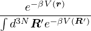
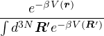

| Temperature | Classical | Quantum | Quantization | Sign Problem | |
| PIMC | any | yes | yes | first |  ∝ exp ∝ exp |
| DMC | zero | no | yes | first |  ∝ exp ∝ exp![[- βN (Ff - FT )]](yyang173-thesis3x.png) |
| FP-DMC | zero | no | yes | first | no |
| VMC | low | no | yes | first | no |
| AFQMC | low | no | yes | second | ? |
| Temperature | Classical | Quantum | Quantization | Sign Problem | |
| PIMC | any | yes | yes | first | ∝ exp |
| DMC | zero | no | yes | first | ∝ exp |
| FP-DMC | zero | no | yes | first | no |
| VMC | low | no | yes | first | no |
| AFQMC | low | no | yes | second | ? |
Path integral Monte Carlo samples the thermal density matrix in particle positions space (first quantization), applicable to any temperature. Seamless transition from Classical to quantum regimes. Ergodicity problem in sampling closed paths. Sign problem for fermions.
|
| (2.1) |
 | (2.2) |
 | (2.3) |
 | (2.4) |
|
| (2.5) |
Diffusion Monte Carlo (DMC) uses an open path to sample ground-state wavefunction. The simulation and be interpreted as imaginary time evolution a trial wavefunction to project out the ground state. No ergodicity problem thanks to importance sampling using a physical guiding function. Sign problem for fermions remain in exact transient-estimate implementation.
Fixed-phase diffusion Monte Carlo uses a trial wavefunction to modify the Hamiltonian to resist change in the phase of the sampled path. No sign problem, but result is exact only if the phase of the trial wavefunction coincides with that of the exact ground-state wavefunction.
There have been several recent discoveries [1, 2, 3, 4, 5] suggesting that quantum wave functions, which include both electronic and ionic degrees of freedom, have many interesting properties that have yet to be explored. This includes the development of equations that exactly factorize a wave function into electronic and ionic components, [2, 6] the disappearance of conical intersections in wave functions of model systems, [3] and the use of quantum entanglement to study electronic and ionic density matrices. [4] Extending such studies to realistic systems is of broad interest and will considerably expand our understanding of electron-ion systems. However, treatment of ab initio electron-ion systems is challenging, and applications have thus been limited. The most accurate simulations of electron-ion wave functions are generally done with very specialized wave functions, which are limited to rather small systems. [7] Methods are also being developed to treat larger systems with different regimes of validity. [8, 9, 10, 11, 12, 13, 14, 15, 16, 17, 18, 19, 20, 21]
As a framework to address these problems in general realistic systems, we recently demonstrated that quantum Monte Carlo (QMC) can be combined with quantum chemistry techniques to generate electron-ion wave functions. [1] We treated realistic molecular systems and demonstrated that our method can be scaled to larger systems than previously considered while maintaining a highly accurate wave function. In the following we extend our previous work by considering the simulation of a larger set of atoms and molecules. We calculate ionization energies and atomization energies that can be directly compared with previous results for benchmarking purposes.
Diffusion Monte Carlo [22, 23, 24, 25, 26, 27] is a projector method that evolves a trial wave function in imaginary time and projects out the ground-state wave function. For practical simulations of fermions, the fixed-node approximation is introduced, which depends only on the set of electronic positions where a trial wave function is equal to zero. This approximation is different than approximations typically used in quantum chemistry calculations, and in this work we demonstrate that we can generate high-quality nodal surfaces for a range of systems that include full electron-ion wave functions.
If the trial wave function has the same nodal surface as the exact ground-state wave function, FN-DMC will obtain the exact ground-state energy. Approximate nodal surfaces can be generated through optimization of the full wave function. Such approximate nodal surfaces have been tested and validated on a wide range of systems, and consistently provide an excellent approximation of the exact ground-state energy, comparable to the state of the art in ab initio simulations. [28] In addition, the energies generated with FN-DMC are variational with respect to the ground-state energy.
In all but a handful of previous QMC simulations, [29, 30, 31, 32, 33, 34, 35] calculations are performed with nuclei ”clamped” to their equilibrium positions. However, such an assumption is not fundamentally required by FN-DMC.
There are several different approaches for generating electronic wave functions for a FN-DMC calculation. [36, 37, 38, 39] Recent advances [40, 41, 38] have made it possible to simultaneously optimize thousands of wave function parameters using variational Monte Carlo with clamped nuclei. We use an initial guess for the wave function that is generated from complete active space self-consistent-field (CASSCF) [42, 43] calculations using the quantum chemistry package GAMESS-US. [44] The optimized orbitals are then used in a configuration interaction singles and doubles (CISD) calculation to generate a series of configuration state functions (CSFs). [45] For the small systems Li+, Be+, LiH and BeH, a CASSCF calculation with a large active space is used in place of CISD. The multi-CSF expansion of the wave function can be expressed in the following form,
ΨCISD( ;o) = ∑
i=1NCSFα
iϕi(;o), ;o) = ∑
i=1NCSFα
iϕi(;o), | (5.1) |
where  refers to the spatial coordinates of all the electrons and
refers to the spatial coordinates of all the electrons and  o refers to the equilibrium positions of all the
ions. ϕi() and
o refers to the equilibrium positions of all the
ions. ϕi() and  = {α1,α2,…} are the CSFs and CI coefficients generated from CISD. The cc-pV5Z basis [46] is
used for the atomic systems and the Roos Augmented Triple Zeta ANO basis [47] is used for the molecular systems
except for the smallest system LiH, where the cc-pV5Z basis is used.
= {α1,α2,…} are the CSFs and CI coefficients generated from CISD. The cc-pV5Z basis [46] is
used for the atomic systems and the Roos Augmented Triple Zeta ANO basis [47] is used for the molecular systems
except for the smallest system LiH, where the cc-pV5Z basis is used.
After the multi-CSF expansion is generated, we impose the electron-nucleus cusp condition on each molecular orbital [48] and add a Jastrow factor to the wave function to include electron correlation. [49] Our Jastrow factor contains electron-electron, electron-nucleus and electron-electron-nucleus terms. The full electronic wave function used in FN-DMC is,
ψe( ; ; ) = eJ( ) = eJ( ,, ,, )Ψ
CISD( )Ψ
CISD( ; ; ). ). | (5.2) |
We optimize the CSF and Jastrow coefficients,  and
and  , respectively, simultaneously with QMCPACK. [50, 51]
Optimization is performed with the ions clamped to their equilibrium positions
, respectively, simultaneously with QMCPACK. [50, 51]
Optimization is performed with the ions clamped to their equilibrium positions  o. The equilibrium geometries for
BeH and BH are chosen to be the ECG-optimized distances for comparison with the ECG (explicitly correlated
Gaussian) method, and the geometries for the rest of the hydrides are taken from experimental data. [52] We use
3.015 a.u. as the equilibrium inter-nuclei distance for LiH, as this geometry is found to provide a lower
clamped-nuclei ground-state energy than the ECG optimized distance of 3.061 a.u.. We include all
CSFs with coefficients larger than a specific cutoff ϵ to lend reasonable flexibility to the wave function
during optimization. We include as many CSFs as possible to maximize the flexibility of the wave
function. However, the inclusion of too many CSFs with small expansion coefficients can introduce
noise as they require a large number of samples in the optimization step to be optimized. We have
chosen ϵ to restrict the number of CSFs in the wave function to be ~1000 in all systems studied.
Optimization is performed with the linear method [41] with roughly 106 statistically independent
samples.
o. The equilibrium geometries for
BeH and BH are chosen to be the ECG-optimized distances for comparison with the ECG (explicitly correlated
Gaussian) method, and the geometries for the rest of the hydrides are taken from experimental data. [52] We use
3.015 a.u. as the equilibrium inter-nuclei distance for LiH, as this geometry is found to provide a lower
clamped-nuclei ground-state energy than the ECG optimized distance of 3.061 a.u.. We include all
CSFs with coefficients larger than a specific cutoff ϵ to lend reasonable flexibility to the wave function
during optimization. We include as many CSFs as possible to maximize the flexibility of the wave
function. However, the inclusion of too many CSFs with small expansion coefficients can introduce
noise as they require a large number of samples in the optimization step to be optimized. We have
chosen ϵ to restrict the number of CSFs in the wave function to be ~1000 in all systems studied.
Optimization is performed with the linear method [41] with roughly 106 statistically independent
samples.

 ,
, ), we simply map the electron to its proper place in the reference wave function ψe(
), we simply map the electron to its proper place in the reference wave function ψe( ;o).
That is, e(
;o).
That is, e( ,
, ) = e(
) = e( + ,
+ , o) = ψe(
o) = ψe( +
+  ;
; o) where is the shift required to put the proton back to
its reference position. (b) For H2+, we pick one of the protons as an “anchor” and approximate the new
wave function by dragging the reference wave function with the “anchor” proton. We also rotate the wave
function to align its axis of symmetry with the orientation of the two protons.
o) where is the shift required to put the proton back to
its reference position. (b) For H2+, we pick one of the protons as an “anchor” and approximate the new
wave function by dragging the reference wave function with the “anchor” proton. We also rotate the wave
function to align its axis of symmetry with the orientation of the two protons. Once a satisfactory electronic wave function has been obtained, we construct the electron-ion wave function using the ansatz,
ΨeI(, ) = ψI( ) = ψI( )e(,), )e(,), | (5.3) |
where denotes the spatial coordinates of all ions and e(, ) is an ion-dependent electronic wave function
adapted from the clamped-nuclei wave function ψe(
) is an ion-dependent electronic wave function
adapted from the clamped-nuclei wave function ψe( ;o) through basis set dependence. Due to the localization of
Gaussian basis sets around nuclei, as used in quantum chemistry calculations, the nodes of e change
based on the ionic positions, which we have previously called the dragged-node approximation. [1]
Although there are approaches for going beyond the dragged-node approximation, it was demonstrated to
be highly accurate over a range of molecules in previous work. [1] For the systems considered here,
we can impose various symmetries of the Hamiltonian onto the wave function that arise from the
relative motion of the ions. In Fig. 5.1 we demonstrate this approach for the simple cases of a hydrogen
atom and an H2+ molecular ion. This approach can be generalized for use in larger systems or even
applied to parts of a bigger system, e.g., treating light ions as quantum particles and heavy ions as
”clamped”.
;o) through basis set dependence. Due to the localization of
Gaussian basis sets around nuclei, as used in quantum chemistry calculations, the nodes of e change
based on the ionic positions, which we have previously called the dragged-node approximation. [1]
Although there are approaches for going beyond the dragged-node approximation, it was demonstrated to
be highly accurate over a range of molecules in previous work. [1] For the systems considered here,
we can impose various symmetries of the Hamiltonian onto the wave function that arise from the
relative motion of the ions. In Fig. 5.1 we demonstrate this approach for the simple cases of a hydrogen
atom and an H2+ molecular ion. This approach can be generalized for use in larger systems or even
applied to parts of a bigger system, e.g., treating light ions as quantum particles and heavy ions as
”clamped”.
The term ψI consists of simple products of Gaussian wave functions over each pair of nuclei,
ψI( ) ∝∏
i,j>ie-aij(| ) ∝∏
i,j>ie-aij(| i- i- j|-bij)2
, j|-bij)2
, | (5.4) |
where aij is a coefficient that is optimized and bij are taken to be the equilibrium distances between the nuclei. Since ψI is nodeless, the choice of the variational parameters aij and bij does not affect the converged FN-DMC energy. FN-DMC is then performed with the fully optimized electron-ion wave function. We perform timestep extrapolation for all of the tested systems. At least four timesteps from 0.005 Ha-1 to 0.0005 Ha-1 are used for all systems studied in the clamped-nuclei FN-DMC calculation, and at least three timesteps from 0.005 Ha-1 to 0.0001 Ha-1 are used in the nonadiabatic FN-DMC calculation.
Using definitions from Ref. [53], the adiabatic approximation will refer to the complete neglect of the
nonadiabatic coupling matrix when the Schr dinger equation is expressed in the basis of eigenstates of the electronic
Hamiltonian. In this context, the nonadiabatic contribution to an eigenvalue of the electronic Hamiltonian can be
partitioned into two parts: the diagonal Born-Oppenheimer correction (DBOC), which only involves the single
electronic state of interest, and the remaining corrections arising from terms that involve excited eigenstates of the
electronic Hamiltonian. The DBOC discussed in this work is the expectation value of the nuclear kinetic energy
operator for the ground adiabatic electronic state. We define the clamped-nuclei ground-state energy Ec as
the lowest eigenvalue of the electronic Hamiltonian and the nonadiabatic ground-state energy En as
the lowest eigenvalue of the full molecular Hamiltonian that includes the nuclear kinetic energy. The
zero-point energy (ZPE) for a diatomic molecule is the energy of the ground vibrational state of the
one-dimensional vibrational mode. Note that the ZPE of the nuclei is part of the difference En - Ec.
The ZPE is not considered to be nonadiabatic, but its contribution is included in the full molecular
Hamiltonian.
dinger equation is expressed in the basis of eigenstates of the electronic
Hamiltonian. In this context, the nonadiabatic contribution to an eigenvalue of the electronic Hamiltonian can be
partitioned into two parts: the diagonal Born-Oppenheimer correction (DBOC), which only involves the single
electronic state of interest, and the remaining corrections arising from terms that involve excited eigenstates of the
electronic Hamiltonian. The DBOC discussed in this work is the expectation value of the nuclear kinetic energy
operator for the ground adiabatic electronic state. We define the clamped-nuclei ground-state energy Ec as
the lowest eigenvalue of the electronic Hamiltonian and the nonadiabatic ground-state energy En as
the lowest eigenvalue of the full molecular Hamiltonian that includes the nuclear kinetic energy. The
zero-point energy (ZPE) for a diatomic molecule is the energy of the ground vibrational state of the
one-dimensional vibrational mode. Note that the ZPE of the nuclei is part of the difference En - Ec.
The ZPE is not considered to be nonadiabatic, but its contribution is included in the full molecular
Hamiltonian.
| Atom | Li(2S) | Be(1S) | B(2P) | C(3P) | N(4S) | O(3P) | F(2P)
| |
| clamped-ion | ||||||||
| FN-DMC | -7.478057(5) | -14.66731(1) | -24.65374(2) | -37.84448(2) | -54.58851(6) | -75.0658(2) | -99.73177(6) | |
| Seth DMC [39] | -7.478067(5) | -14.667306(7) | -24.65379(3) | -37.84446(6) | -54.58867(8) | -75.0654(1) | -99.7318(1) | |
| Erefa | -7.4780603 | -14.667356 | -24.653866 | -37.8450 | -54.5892 | -75.0673 | -99.7339 | |
| nonadiabatic | ||||||||
| FN-DMC | -7.47742(2) | -14.66643(3) | -24.65252(4) | -37.84273(4) | -54.58641(5) | -75.06313(6) | -99.7293(1) | |
| ECG b | -7.4774519 | -14.666435 | -24.652624 | -37.841621 | N/A | N/A | N/A | |
| Ion | Li+(1S) | Be+(2S) | B+(1S) | C+(2P) | N+(4S) | O+(3P) | F+(2P)
| |
| clamped-ion | ||||||||
| FN-DMC | -7.27989(2) | -14.324749(7) | -24.34883(1) | -37.43071(2) | -54.05371(5) | -74.56597(6) | -99.0909(1) | |
| Seth DMC [39] | -7.279914(3) | -14.324761(3) | -24.34887(2) | -37.43073(4) | -54.05383(7) | -74.56662(7) | -99.0911(2) | |
| Erefc | -7.2799134 | -14.324763 | -24.348884 | -37.430880 | -54.0546 | -74.5668 | -99.0928 | |
| nonadiabatic | ||||||||
| FN-DMC | -7.27931(4) | -14.32387(2) | -24.34758(3) | -37.42899(6) | -54.05165(4) | -74.5634(1) | -99.0885(1) | |
| ECG d | N/A | -14.323863 | -24.347641 | -37.429169 | N/A | N/A | N/A | |
| clamped-ion | ||||||||
| IP (FN-DMC) | 0.19817(2) | 0.34256(1) | 0.30490(2) | 0.41377(3) | 0.53479(8) | 0.4998(2) | 0.6409(1) | |
| nonadiabatic | ||||||||
| IP (FN-DMC) | 0.19811(4) | 0.34257(4) | 0.30494(5) | 0.41374(7) | 0.53476(7) | 0.4998(1) | 0.6408(1) | |
| IP (Ref.)e | 0.198130 | 0.342572 | 0.304980 | 0.414014 | 0.534775 | 0.500452 | 0.640946 | |
To assess the quality of our results for atoms and ions [67], we compare to previous results from highly accurate simulations, as presented in Table 5.1. For the clamped-ion results, QMC [38, 37, 39, 68, 69] and quantum chemistry benchmarks are available for comparison. To illustrate the high-quality QMC techniques used in this work, we compare our clamped-ion atomic results with a recent QMC benchmark study. [39] The ground-state FN-DMC energies consistently agree across all systems studied (except for O+) within 0.1 mHa. This shows that similar nodes can be obtained with different forms of the wave function. In particular, our large (~ 1000 CSF) multi-determinant expansions can be compared with the approach used by Seth et al., [39] which relies on moderately-sized multi-determinant expansions (~ 100 CSF) with a backflow transformation. For certain atoms we can compare to more accurate simulation techniques. For C+ as well as the neutral and ionized Li, Be and B, highly accurate ECG calculations that are all converged well beyond 0.1 mHa to the true ground-state energy are available. The convergence is corroborated by results from the Hylleraas method for Li [54] and Be+. [62] In Table 5.1 we have used the lowest variational results as our references for these systems, as the convergence is such that the accuracy is higher than other current theoretical or experimental estimates.
All of our clamped-ion results agree within 0.2 mHa of the ECG references, as shown in Figure 5.2. The error bars for the reference ECG results are absorbed into the DMC error bars for clarity, although the ECG error bars are orders of magnitude smaller compared to the DMC error bars. While ECG results exist for C and N, they are not well converged and are not suitable references. [60, 70] The benchmark results in Ref. [57] are a standard for atomic energies, and we report them as our references in Table 5.1 for the larger atoms. However, these benchmark results are not consistently accurate to 0.1 mHa. For instance, if we use the ECG results for C+ with the most accurate ionization reference energy, then we find a reference energy for the C atom of -37.84489 Ha, which is 0.1 mHa higher than that reported in Ref. [57]. The systems with the most error are O and F, for which other QMC studies seem to experience similar difficulties. [39, 71, 38, 72] We note that for some of these systems it may be possible to absorb the sign problem and increase the accuracy further in future studies. [73, 74]
It is more difficult to find accurate references for the nonadiabatic results. We provide the first nonadiabatic QMC benchmarks for the first-row atoms. There are six ECG calculations of nonadiabatic ground-state energies that are reportedly converged beyond 0.1 mHa, which we use as references. Our reported nonadiabatic ground-state energies for Li, Be, Be+, B, B+ and C+ are in agreement with the ECG results to within 0.2 mHa, as shown in Figure 5.2. For these systems, the ECG results are converged to essentially the exact ground-state energies in both the clamped-ion and nonadiabatic cases. The difference between our DMC ground-state and ECG reference is the fixed-node error present in our wave functions. We would expect the clamped ion results to be more accurate than the nonadiabatic results, since the nonadiabatic wave functions are inherently more difficult to construct. However, for the systems in Figure 5.2, this difference in quality is less than 0.1 mHa. In the case of Be, Be+, and B, the nonadiabatic wave function is actually more accurate than the corresponding clamped-ion wave function.
No reference calculations exist for the heavier atoms N,O, and F. However, it is possible to apply finite-mass correction [57, 75] (i.e., divide by 1 + me∕M, where me is the mass of an electron and M is the mass of the nucleus) to the best clamped-ion references to estimate the nonadiabatic references. The energies for N, O, and F obtained in this way are -54.5871, -75.0647 and -99.7310 Ha, respectively. For the ionized states, we obtain -54.0525, -74.5643 and -99.0900 Ha.
The ionization potentials are reported in Table 5.1 and shown in Figure 5.3. For determining a set of nonadiabatic reference data, we subtract the spin-orbit and relativistic corrections (estimated by Klopper et. al. [65]) from the NIST experimental data. [66] Ref. [65] is considered to have the most accurate ionization energies due to its usage of state-of-the-art quantum chemistry techniques shown to provide close agreement with experiment. For the atoms considered in this work, ionization energies have previously been predicted to be independent of all nonadiabatic effects beyond the DBOC to within an accuracy of 0.1 mHa. [65] This prediction is based on calculations that are reported to be exact and agree to high accuracy with experiment. As shown in Figure 5.3, the ionization potentials calculated with and without the Born-Oppenheimer approximation are all within 1 mHa of the reference energies. Further, the clamped-ion and nonadiabatic predictions for the ionization potentials are statistically indistinguishable for all systems studied, consistent with the previous study. [65]
| System | En - Ec | DBOC | System | En - Ec | DBOC |
| Li+ | 0.58(4) | 0.591970 | Li | 0.64(2) | 0.608411 |
| Be+ | 0.88(2) | 0.899706 | Be | 0.88(3) | 0.920848 |
| B+ | 1.25(4) | 1.242988 | B | 1.21(5) | 1.241669 |
| C+ | 1.72(6) | 1.710382 | C | 1.75(5) | 1.710900 |
| N+ | 2.07(6) | 2.066914 | N | 2.10(8) | 2.069149 |
| O+ | 2.6(1) | 2.440320 | O | 2.6(2) | 2.441821 |
| F+ | 2.4(2) | 2.675128 | F | 2.5(1) | 2.678181 |
In Table 5.2 and Figure 5.4, we demonstrate the amount of nonadiabatic contribution to the ground-state energies in atoms and ions calculated as the difference between the nonadiabatic and clamped-ion ground-state energies. The amount of nonadiabatic contribution is always positive for these systems and mostly increases with atomic number. Using previous benchmark values for the DBOC, we can break down the nonadiabatic contribution of our system into a DBOC contribution and everything beyond the DBOC. [77, 78, 79] The DBOC is relatively insensitive to the level of theory. Figure 5.4 indicates that in the atomic systems, the DBOC is the dominant contribution to the nonadiabatic energy, with the remaining amount being close to zero within error bars. The nonadiabatic energy is relatively constant between the neutral and cationic species. This observation suggests that the amount of nonadiabatic contribution is insensitive to the addition or removal of a valence electron. Physically, the valence electrons are farther from the nucleus than the core electrons, and thus are likely to be affected to a lesser degree by the delocalization of the nucleus.
The nonadiabatic contributions in the cations can also be compared with those in their corresponding hydrogen-like atoms for a more in-depth analysis. The nonadiabatic contribution in a hydrogen-like atom can be obtained analytically. The result in Hartree atomic units is
| En - Ec = (1 - μ) | (5.5) |
where μ =  is the reduced mass of the hydrogen-like atom and M and Z are the mass and atomic
number of the nucleus, respectively. The increase in the nonadiabatic contribution with increasing Z for
hydrogen-like atoms reflects the stronger Coulombic attraction between the electron and the nucleus,
which enhances the effects of the delocalization of the nucleus. An interesting case to consider is the
transition from Li2+ to Li. As shown in Figure 5.4 and Figure 5.5, the addition of a core electron to Li2+
decreases the nonadiabatic contribution, while the addition of a valence electron has no further effect
within our error bars. We also calculate the nonadiabatic contribution in Be2+ to be 0.78(5) mHa,
which is 0.29(5) mHa lower than the nonadiabatic contribution in Be3+ and is closer to that in Be+ of
0.88(2) mHa. Because the core electrons interact more strongly with the nucleus than do the valence
electrons, the core electrons are affected more by the delocalization of the nucleus. Moreover, the addition
of a second core electron decreases the nonadiabatic contribution for Li2+ and Be3+. We note that
the nonadiabatic correction to the atomic ground-state energies of Eq. (5.5), which only holds for
single electron systems, is roughly linear in Z, while the relativistic recoil correction [80] scales as Z4.
Therefore, the nonadiabatic effect is not seen experimentally, as it is less significant than this relativistic
effect.
is the reduced mass of the hydrogen-like atom and M and Z are the mass and atomic
number of the nucleus, respectively. The increase in the nonadiabatic contribution with increasing Z for
hydrogen-like atoms reflects the stronger Coulombic attraction between the electron and the nucleus,
which enhances the effects of the delocalization of the nucleus. An interesting case to consider is the
transition from Li2+ to Li. As shown in Figure 5.4 and Figure 5.5, the addition of a core electron to Li2+
decreases the nonadiabatic contribution, while the addition of a valence electron has no further effect
within our error bars. We also calculate the nonadiabatic contribution in Be2+ to be 0.78(5) mHa,
which is 0.29(5) mHa lower than the nonadiabatic contribution in Be3+ and is closer to that in Be+ of
0.88(2) mHa. Because the core electrons interact more strongly with the nucleus than do the valence
electrons, the core electrons are affected more by the delocalization of the nucleus. Moreover, the addition
of a second core electron decreases the nonadiabatic contribution for Li2+ and Be3+. We note that
the nonadiabatic correction to the atomic ground-state energies of Eq. (5.5), which only holds for
single electron systems, is roughly linear in Z, while the relativistic recoil correction [80] scales as Z4.
Therefore, the nonadiabatic effect is not seen experimentally, as it is less significant than this relativistic
effect.
| Molecule | LiH(1Σ+) | BeH(2Σ+) | BH(1Σ+) | CH(2Π) | OH(2Π) | HF(1Σ+)
| |
| clamped-nuclei | |||||||
| FN-DMC | -8.070518(7) | -15.24793(2) | -25.28867(3) | -38.4780(1) | -75.7356(1) | -100.4552(1) | |
| Eref a | -8.0705473 | -15.2483(4) | -25.2893(2) | -38.4792(2) | -75.7382(2) | -100.4600(3) | |
| nonadiabatic | |||||||
| FN-DMC | -8.06624(3) | -15.24194(5) | -25.28128(9) | -38.4672(3) | -75.7245(5) | -100.4431(4) | |
| ECG [81, 59, 82] | -8.0664371(15) | -15.24203(10) | -25.2803(10) | N/A | N/A | N/A | |
| clamped-nuclei | |||||||
| De (FN-DMC) | 0.09246(1) | 0.08062(2) | 0.13493(3) | 0.1335(1) | 0.1699(2) | 0.2234(1) | |
| De Feller b | 0.09262(5) | 0.0809(4) | 0.1354(2) | 0.1342(2) | 0.1709(2) | 0.2258(3) | |
| nonadiabatic | |||||||
| Do (FN-DMC) | 0.08910(4) | 0.07578(6) | 0.1290(1) | 0.1248(3) | 0.1617(5) | 0.2141(4) | |
| Do Feller c | 0.08940(5) | 0.0761(4) | 0.1299(2) | 0.1276(2) | 0.1622(2) | 0.2166(3) | |
| Do Exp. [52, 83] | 0.08874(38) | 0.07475(4) | 0.1281(37)d | 0.1275(5) | 0.1622(1) | 0.2158(3) | |
In Table 5.3, we present our results on a series of molecular systems (hydrides). Finding accurate reference data for these systems to 0.1 mHa is not straightforward. We will use highly converged ECG data when available. Two ECG calculations have been performed in the clamped-nuclei limit for LiH [75, 84] and we agree within 0.03 mHa with the more recent reference. For the rest of the systems, we combined the best clamped-ion atomic references in Table 5.1 and thermochemistry [85] estimates of atomization energy De in Table 5.3 to produce the reference ground-state energies. For BeH and BH, we are within 1 mHa of the reference values, and our energies are lower than the best available quantum chemistry results of -15.247846 Ha [86] and -25.287650 Ha [87] for BeH and BH, respectively.
Nonadiabatic ECG calculations only exist for the three smallest hydrides. Our results for LiH and BeH agree with the ECG references to within 0.2 mHa, as shown in Figure 5.6. The ECG reference for LiH is converged to the true ground-state energy beyond 0.1 mHa; thus, it is likely that our wave function has a fixed-node error of 0.2 mHa. For BeH, our result is within 0.1 mHa of the ECG reference and agrees within error bars. With BH being one of the largest ECG simulations performed, the DMC result is actually lower in energy, in this case by 1 mHa. The ECG error bar on BH is large, and it is not evident how close our result is to the true ground state, although extrapolating the ECG result with basis set size suggests we are within 1 mHa. [59] For these nonadiabatic systems, we have the lowest variational result for BH, and the only simulated results of for CH, OH, and HF, to the best of our knowledge.
The atomization energies of the diatomic systems are reported in Table 5.3. High-quality thermochemistry benchmarks are used for comparison. [85] We take the reference energies from the last column of Table VI of Ref. [85] and subtract the corrections in the ΔESR (scalar relativistic) and SO (spin-orbit coupling) columns for the comparison with our nonadiabatic energies. For the comparison with our clamped-nuclei results, we further subtract the DBOC and ZPE (zero-point energy) corrections. Corrections from spin-orbit coupling and relativistic effects are not used, as they are not included in our Hamiltonian. The atomization energies estimated in the clamped-nuclei limit agree within 1 mHa of the references for all but the largest molecule, HF. Within quantum Monte Carlo, it is generally more difficult to obtain an accurate nodal surface for a molecule than for an atom. As a result, our estimates for the clamped-nuclei atomization energies are lower than the references in all cases. A similar trend can be observed when comparing our nonadiabatic results with the references. For each molecule, the deviation from the reference is similar in the clamped-nuclei and nonadiabatic cases except for CH.
In Figure 5.7, we compare both our clamped-nuclei and our nonadiabatic results to experimental data. We also provide adiabatic estimates by adding the zero-point energies calculated with coupled-cluster techniques in Ref. [85] to our clamped-nuclei results. To calculate experimental atomization energies starting from the clamped-nuclei results, energetic corrections due to zero-point motion of the nuclei, nonadiabatic effects, spin-orbit coupling and relativistic effects should be included. For these highly adiabatic systems, the inclusion of zero-point motion alone is sufficient to bring our clamped-nuclei results to within 2 mHa of the experimental results. Except for the case of CH, the nonadiabatic results agree closely with their adiabatic counterparts and are closer to the experimental values, although for BH the experimental error bar is too large to provide a high-accuracy comparison. For CH, the experimental result suggests that our electron-ion wave function for this molecule has an unusually large fixed-node error.
To estimate the nonadiabatic contribution to the ground-state energies for these hydrides, we calculate the difference between our nonadiabatic and adiabatic results, as shown in Figure 5.8. Similar to the atomic case, we break down the nonadiabatic energy of our system into a DBOC contribution and everything beyond the DBOC. [78, 79, 88] The ZPE and DBOC contributions to this difference are listed in Table 5.4. We also calculate the nonadiabatic correction to the dissociation energies of the hydrides. For BeH, OH, and HF, the nonadiabatic contribution is almost entirely accounted for by the DBOC with the remaining correction being zero within error bars. For LiH, BH, and CH, the remaining amount of nonadiabatic contribution seems to be nonzero, and appears quite significant in CH. However, if the electron-ion wave function is significantly lower in quality than the electronic wave function for a given system, then the amount of nonadiabatic contribution will be overestimated. We also use the zero-point energies from Feller et. al. [85] as corrections, which may introduce some additional uncertainty. Regardless, our current predictions suggest that nonadiabatic effects in BH and CH are larger than in the other systems we considered.
For the LiH molecule, we also calculated the electron affinity for comparison to ECG results. We calculated the ground-state energy of LiH- to be -8.08222(2) Ha for the case of clamped-nuclei. With nonadiabatic effects included, our result is -8.07811(3) Ha. Our nonadiabatic result is in good agreement with a previous ECG study, [89] which reported a value of -8.07856887 Ha. We report an electron affinity of 0.01187(4) Ha, which can be compared to the ECG prediction of 0.012132(2) Ha and agrees with the experimental value of 0.0126(4) Ha. [90]
| System | En - Ec | ZPE | DBOC | ΔDo |
| LiH | 4.28(3) | 3.17 | 0.902410 | -0.19(4) |
| BeH | 5.99(6) | 4.65 | 1.251000 | -0.19(6) |
| BH | 7.39(9) | 5.34 | 1.692559 | -0.6(1) |
| CH | 10.8(3) | 6.44 | 2.109487 | -2.3(3) |
| OH | 11.1(5) | 8.43 | 2.670397 | 0.2(5) |
| HF | 12.0(4) | 9.34 | 2.799624 | 0.1(4) |
We calculated the ground-state energies of first-row atoms and their corresponding ions and hydrides with and without the Born-Oppenheimer approximation. In addition, we examined the amount of nonadiabatic contribution to the ground-state energies of all systems studied and determined the amount to be up to a few mHa. In the case of CH, the nonadiabatic effects beyond the DBOC were unusually large, although we could not rule out the possibility that this discrepancy is due to the fixed-node error in our simulations. We found the ionization energies of the atoms to be independent of the Born-Oppenheimer approximation, consistent with a previous high-level quantum chemistry study. [65] In contrast, the atomization energies of the hydrides showed effects of nonadiabaticity, although they were generally much less than 1 mHa. This work obtained the first nonadiabatic QMC benchmark data for non-relativistic ground-state energies and obtained the lowest variational result for BH and the only results for CH, OH and HF, to the best of our knowledge.
In comparing to accurate benchmark results obtained with other methods, we have demonstrated the validity of our wave function ansatz, namely it does produce a high-quality electron-ion wave function. This technique also has the potential to solve interesting larger-scale problems due to its ease of implementation, as well as the polynomial scaling in computational time with respect to the number of electrons.
[1] Norm M. Tubman, Ilkka Kylnp, Sharon Hammes-Schiffer, and David M. Ceperley. Beyond the born-oppenheimer approximation with quantum monte carlo methods. Phys. Rev. A, 90:042507, Oct 2014.
[2] Lorenz S. Cederbaum. The exact molecular wavefunction as a product of an electronic and a nuclear wavefunction. J. Chem. Phys., 138(22):–, 2013.
[3] Seung Kyu Min, Ali Abedi, Kwang S. Kim, and E.K.U. Gross. Is the molecular berry phase an artifact of the born-oppenheimer approximation? Phys. Rev. Lett., 113:263004, Dec 2014.
[4] PeterA. Bouvrie, AnaP. Majtey, MalteC. Tichy, JesusS. Dehesa, and AngelR. Plastino. Entanglement and the born-oppenheimer approximation in an exactly solvable quantum many-body system. The European Physical Journal D, 68(11), 2014.
[5] Benjamin G. Levine and Todd J. Martnez. Isomerization through conical intersections. Annu. Rev. Phys. Chem., 58(1):613–634, 2007.
[6] Lorenz S. Cederbaum. Erratum: “the exact molecular wavefunction as a product of an electronic and a nuclear wavefunction” [j. chem. phys.138, 224110 (2013)]. J. Chem. Phys., 141(2):–, 2014.
[7] Jim Mitroy, Sergiy Bubin, Wataru Horiuchi, Yasuyuki Suzuki, Ludwik Adamowicz, Wojciech Cencek, Krzysztof Szalewicz, Jacek Komasa, D. Blume, and Klmn Varga. Theory and application of explicitly correlated gaussians. Rev. Mod. Phys., 85:693–749, May 2013.
[8] Simon P. Webb, Tzvetelin Iordanov, and Sharon Hammes-Schiffer. Multiconfigurational nuclear-electronic orbital approach: Incorporation of nuclear quantum effects in electronic structure calculations. J. Chem. Phys., 117(9):4106–4118, 2002.
[9] Arindam Chakraborty, Michael V. Pak, and Sharon Hammes-Schiffer. Inclusion of explicit electron-proton correlation in the nuclear-electronic orbital approach using gaussian-type geminal functions. J. Chem. Phys., 129(1):–, 2008.
[10] Andrew Sirjoosingh, Michael V. Pak, Chet Swalina, and Sharon Hammes-Schiffer. Reduced explicitly correlated hartree-fock approach within the nuclear-electronic orbital framework: Theoretical formulation. J. Chem. Phys., 139(3):–, 2013.
[11] Chet Swalina, Michael V. Pak, Arindam Chakraborty, and Sharon Hammes-Schiffer. Explicit dynamical electron-proton correlation in the nuclear-electronic orbital framework. J. Phys. Chem. A, 110(33):9983–9987, 2006.
[12] Kurt R. Brorsen, Andrew Sirjoosingh, Michael V. Pak, and Sharon Hammes-Schiffer. Nuclear-electronic orbital reduced explicitly correlated hartree-fock approach: Restricted basis sets and open-shell systems. J. Chem. Phys., 142(21):–, 2015.
[13] Andrew Sirjoosingh, Michael V. Pak, Kurt R. Brorsen, and Sharon Hammes-Schiffer. Quantum treatment of protons with the reduced explicitly correlated hartree-fock approach. J. Chem. Phys., 142(21):–, 2015.
[14] Arindam Chakraborty, Michael Pak, and Sharon Hammes-Schiffer. Development of electron-proton density functionals for multicomponent density functional theory. Phys. Rev. Lett., 101:153001, Oct 2008.
[15] Andrew Sirjoosingh, Michael V. Pak, and Sharon Hammes-Schiffer. Multicomponent density functional theory study of the interplay between electron-electron and electron-proton correlation. J. Chem. Phys., 136(17):–, 2012.
[16] Andrew Sirjoosingh, Michael V. Pak, and Sharon Hammes-Schiffer. Derivation of an electron–proton correlation functional for multicomponent density functional theory within the nuclear–electronic orbital approach. J. Chem. Theory Comput., 7(9):2689–2693, 2011.
[17] T. Kreibich and E. Gross. Multicomponent density-functional theory for electrons and nuclei. Phys. Rev. Lett., 86:2984–2987, Apr 2001.
[18] Thomas Kreibich, Robert van Leeuwen, and E. Gross. Multicomponent density-functional theory for electrons and nuclei. Phys. Rev. A, 78:022501, Aug 2008.
[19] Ilkka Kylnp, Tapio Rantala, and David Ceperley. Few-body reference data for multicomponent formalisms: Light-nuclei molecules. Phys. Rev. A, 86:052506, Nov 2012.
[20] Ilkka Kylnp and Tapio T. Rantala. First-principles simulation of molecular dissociation–recombination equilibrium. J. Chem. Phys., 135(10):–, 2011.
[21] Ilkka Kylnp and Tapio T. Rantala. Finite temperature quantum statistics of h3+ molecular ion. J. Chem. Phys., 133(4):–, 2010.
[22] James B. Anderson. A random-walk simulation of the schrdinger equation: H+3. J. Chem. Phys., 63(4):1499–1503, 1975.
[23] Brian L. Hammond, Peter J. Reynolds, and William A. Lester. Monte Carlo Methods in Ab Initio Quantum Chemistry. World Scientific, 1994.
[24] Stuart M. Rothstein. A survey on pure sampling in quantum monte carlo methods. Can. J. Chem., 91(7):505–510, 2013.
[25] R J Needs, M D Towler, N D Drummond, and P Lez Ros. Continuum variational and diffusion quantum monte carlo calculations. J. Phys-Condens. Mat., 22(2):023201, 2010.
[26] R. J. Needs and M. D. Towler. The diffusion quantum monte carlo method: Designing trial wave functions for nio. Int. J. Mod Phys B, 17(28):5425–5434, 2003.
[27] W. M. C. Foulkes, L. Mitas, R. J. Needs, and G. Rajagopal. Quantum monte carlo simulations of solids. Rev. Mod. Phys., 73:33–83, Jan 2001.
[28] Jeffrey C. Grossman. Benchmark quantum monte carlo calculations. J. Chem. Phys., 117(4):1434–1440, 2002.
[29] D. Ceperley and B. Alder. Ground state of solid hydrogen at high pressures. Phys. Rev. B, 36:2092–2106, Aug 1987.
[30] V. Natoli, Richard Martin, and D. Ceperley. Crystal structure of atomic hydrogen. Phys. Rev. Lett., 70:1952–1955, Mar 1993.
[31] Vincent Natoli, Richard Martin, and David Ceperley. Crystal structure of molecular hydrogen at high pressure. Phys. Rev. Lett., 74:1601–1604, Feb 1995.
[32] Bin Chen and James B. Anderson. Improved quantum monte carlo calculation of the ground-state energy of the hydrogen molecule. J. Chem. Phys., 102(7):2802–2805, 1995.
[33] S. A. Alexander and R. L. Coldwell. Fully nonadiabatic properties of all h2 isotopomers. J. Chem. Phys., 129(11):–, 2008.
[34] Luca Bertini, Massimo Mella, Dario Bressanini, and Gabriele Morosi. Borromean binding in h2 with yukawa potential: A nonadiabatic quantum monte carlo study. Phys. Rev. A, 69:042504, Apr 2004.
[35] Guglielmo Mazzola, Andrea Zen, and Sandro Sorella. Finite-temperature electronic simulations without the born-oppenheimer constraint. J. Chem. Phys., 137(13):–, 2012.
[36] C. J. Umrigar, Julien Toulouse, Claudia Filippi, S. Sorella, and R. G. Hennig. Alleviation of the fermion-sign problem by optimization of many-body wave functions. Phys. Rev. Lett., 98:110201, Mar 2007.
[37] Julien Toulouse and C. J. Umrigar. Full optimization of jastrow–slater wave functions with application to the first-row atoms and homonuclear diatomic molecules. J. Chem. Phys., 128(17):–, 2008.
[38] M. D. Brown, J. R. Trail, P. Lpez Ros, and R. J. Needs. Energies of the first row atoms from quantum monte carlo. J. Chem. Phys., 126(22):–, 2007.
[39] P. Seth, P. Lpez Ros, and R. J. Needs. Quantum monte carlo study of the first-row atoms and ions. J. Chem. Phys., 134(8):–, 2011.
[40] M. Nightingale and Vilen Melik-Alaverdian. Optimization of ground- and excited-state wave functions and van der waals clusters. Phys. Rev. Lett., 87:043401, Jul 2001.
[41] C. Umrigar and Claudia Filippi. Energy and variance optimization of many-body wave functions. Phys. Rev. Lett., 94:150201, Apr 2005.
[42] Galina Chaban, Michael W. Schmidt, and Mark S. Gordon. Approximate second order method for orbital optimization of scf and mcscf wavefunctions. Theor. Chem. Acc., 97(1-4):88–95, 1997.
[43] Attila Szabo and Neil S. Ostlund. Modern Quantum Chemistry. McGraw-Hill, Inc., 1989.
[44] Michael W. Schmidt, Kim K. Baldridge, Jerry A. Boatz, Steven T. Elbert, Mark S. Gordon, Jan H. Jensen, Shiro Koseki, Nikita Matsunaga, Kiet A. Nguyen, Shujun Su, Theresa L. Windus, Michel Dupuis, and John A. Montgomery. General atomic and molecular electronic structure system. J. Comput. Chem., 14(11):1347–1363, 1993.
[45] Ruben Pauncz. Spin Eigenfunctions: Construction and Use. Plenum Press, New York, 227 West 17th Street, New York, N.Y. 10011, 1979.
[46] Thom H. Dunning. Gaussian basis sets for use in correlated molecular calculations. i. the atoms boron through neon and hydrogen. J. Chem. Phys., 90(2):1007–1023, 1989.
[47] Per-Olof Widmark, Per-ke Malmqvist, and BjrnO. Roos. Density matrix averaged atomic natural orbital (ano) basis sets for correlated molecular wave functions. Theoretica chimica acta, 77(5):291–306, 1990.
[48] A. Ma, M. D. Towler, N. D. Drummond, and R. J. Needs. Scheme for adding electron–nucleus cusps to gaussian orbitals. J. Chem. Phys., 122(22):–, 2005.
[49] Tosio Kato. On the eigenfunctions of many-particle systems in quantum mechanics. Commun. Pur. Appl. Math., 10(2):151–177, 1957.
[50] Jeongnim Kim, Kenneth P Esler, Jeremy McMinis, Miguel A Morales, Bryan K Clark, Luke Shulenburger, and David M Ceperley. Hybrid algorithms in quantum monte carlo. J. Phys. Conf. Ser., 402(1):012008, 2012.
[51] K.P. Esler, Jeongnim Kim, D.M. Ceperley, and L. Shulenburger. Accelerating quantum monte carlo simulations of real materials on gpu clusters. Comput. Sci. Eng., 14(1):40–51, Jan 2012.
[52] NIST Computational Chemistry Comparison and Benchmark Database, NIST Standard Reference Database Number 101, Release 16a, August 2013. Editor: Russell D. Johnson III, http://cccbdb.nist.gov/.
[53] Graham A. Worth and Lorenz S. Cederbaum. Beyond born-oppenheimer: Molecular dynamics through a conical intersection. Annu. Rev. Phys. Chem., 55(1):127–158, 2004.
[54] L. M. Wang, Z.-C. Yan, H. X. Qiao, and G. W. F. Drake. Variational upper bounds for low-lying states of lithium. Phys. Rev. A, 83:034503, Mar 2011.
[55] Monika Stanke, Jacek Komasa, Sergiy Bubin, and Ludwik Adamowicz. Five lowest 1s states of the be atom calculated with a finite-nuclear-mass approach and with relativistic and qed corrections. Phys. Rev. A, 80:022514, Aug 2009.
[56] Sergiy Bubin and Ludwik Adamowicz. Correlated-gaussian calculations of the ground and low-lying excited states of the boron atom. Phys. Rev. A, 83:022505, Feb 2011.
[57] Subhas J. Chakravorty, Steven R. Gwaltney, Ernest R. Davidson, Farid A. Parpia, and Charlotte F. Fischer. Ground-state correlation energies for atomic ions with 3 to 18 electrons. Phys. Rev. A, 47:3649–3670, May 1993.
[58] Monika Stanke, Jacek Komasa, Dariusz Kȩdziera, Sergiy Bubin, and Ludwik Adamowicz. Accuracy limits on the description of the lowest s excitation in the li atom using explicitly correlated gaussian basis functions. Phys. Rev. A, 78:052507, Nov 2008.
[59] Sergiy Bubin and Ludwik Adamowicz. Calculations of the ground states of beh and beh+ without the born-oppenheimer approximation. J. Chem. Phys., 126(21):–, 2007.
[60] Sergiy Bubin, Michele Pavanello, Wei-Cheng Tung, Keeper L. Sharkey, and Ludwik Adamowicz. Born–oppenheimer and non-born–oppenheimer, atomic and molecular calculations with explicitly correlated gaussians. Chem. Rev., 113(1):36–79, 2013.
[61] Hiroyuki Nakashima and Hiroshi Nakatsuji. Solving the schrdinger equation for helium atom and its isoelectronic ions with the free iterative complement interaction (ici) method. J. Chem. Phys., 127(22):–, 2007.
[62] Mariusz Puchalski, Dariusz Kȩdziera, and Krzysztof Pachucki. Ground state of li and be+ using explicitly correlated functions. Phys. Rev. A, 80:032521, Sep 2009.
[63] Sergiy Bubin, Jacek Komasa, Monika Stanke, and Ludwik Adamowicz. Isotope shifts of the three lowest s1 states of the b+ ion calculated with a finite-nuclear-mass approach and with relativistic and quantum electrodynamics corrections. J. Chem. Phys., 132(11):–, 2010.
[64] Sergiy Bubin and Ludwik Adamowicz. Accurate variational calculations of the ground 2po(1s22s22p) and excited 2s(1s22s2p2) and 2po(1s22s23p) states of singly ionized carbon atom. J. Chem. Phys., 135(21):–, 2011.
[65] Wim Klopper, Rafał A. Bachorz, David P. Tew, and Christof Httig. Sub-mev accuracy in first-principles computations of the ionization potentials and electron affinities of the atoms h to ne. Phys. Rev. A, 81:022503, Feb 2010.
[66] J. E. Sansonetti and W. C. Martin. Handbook of basic atomic spectroscopic data. J. Phys. Chem. Ref. Data, 34(4):1559–2259, 2005.
[67] All calculations are performed for the most abundant isotope. In units of electron mass, the isotope masses for Li, Be, B, C, N, O, F are taken to be 12782.4327, 16419.2608, 20214.7648 6, 21862.7553, 25512.1484, 29141.0754, 34613.1200, respectively. The Li mass used for the LiH molecule is 12649.6690, which is slightly different from that used for the atomic Li simulations, but we do not expect this to affect our results within our statistical errors.
[68] Miguel A. Morales, Jeremy McMinis, Bryan K. Clark, Jeongnim Kim, and Gustavo E. Scuseria. Multideterminant wave functions in quantum monte carlo. J. Chem. Theory Comput., 8(7):2181–2188, 2012.
[69] Myung Won Lee, Massimo Mella, and Andrew M. Rappe. Electronic quantum monte carlo calculations of atomic forces, vibrations, and anharmonicities. J. Chem. Phys., 122(24):–, 2005.
[70] Keeper L. Sharkey and Ludwik Adamowicz. An algorithm for nonrelativistic quantum-mechanical finite-nuclear-mass variational calculations of nitrogen atom in l = 0, m = 0 states using all-electrons explicitly correlated gaussian basis functions. J. Chem. Phys., 140(17):–, 2014.
[71] George H. Booth and Ali Alavi. Approaching chemical accuracy using full configuration-interaction quantum monte carlo: A study of ionization potentials. J. Chem. Phys., 132(17):–, 2010.
[72] Shiwei Zhang and Henry Krakauer. Quantum monte carlo method using phase-free random walks with slater determinants. Phys. Rev. Lett., 90:136401, Apr 2003.
[73] Norm M. Tubman, Jonathan L DuBois, Randolph Q. Hood, and Berni J. Alder. Prospects for release-node quantum monte carlo. J. Chem. Phys., 135(18):–, 2011.
[74] Norm M. Tubman, Jonathan L. DuBois, and Berni J. Alder. Recent Results in the Exact Treatment of Fermions at Zero and Finite Temperature, chapter 5, pages 41–50.
[75] Wojciech Cencek and Jacek Rychlewski. Benchmark calculations for he2+ and lih molecules using explicitly correlated gaussian functions. Chem. Phys. Lett., 320(5–6):549 – 552, 2000.
[76] Wim Klopper. personal communication.
[77] The DBOC values for the atoms and ions provided by Prof. Wim Klopper are calculated at the CCSD/d-aug-cc-pwCVQZ level using CFOUR.
[78] CFOUR, a quantum chemical program package written by J.F. Stanton, J. Gauss, M.E. Harding, P.G. Szalay and others.
[79] Michael E. Harding, Thorsten Metzroth, Jrgen Gauss, and Alexander A. Auer. Parallel calculation of ccsd and ccsd(t) analytic first and second derivatives. J. Chem. Theory Comput., 4(1):64–74, 2008.
[80] Jinjun Liu, Edcel J. Salumbides, Urs Hollenstein, Jeroen C. J. Koelemeij, Kjeld S. E. Eikema, Wim Ubachs, and Frdric Merkt. Determination of the ionization and dissociation energies of the hydrogen molecule. J. Chem. Phys., 130(17):–, 2009.
[81] Sergiy Bubin, Ludwik Adamowicz, and Marcin Molski. An accurate non-born–oppenheimer calculation of the first purely vibrational transition in lih molecule. J. Chem. Phys., 123(13):–, 2005.
[82] Sergiy Bubin, Monika Stanke, and Ludwik Adamowicz. Non-born–oppenheimer calculations of the bh molecule. J. Chem. Phys., 131(4):–, 2009.
[83] K. P. Huber and G. Herzberg. Molecular Spectra and Molecular Structure: Constants of Diatomic Molecules. Van Nostrand Reinhold, New York, 1979, 1979.
[84] Wei-Cheng Tung, Michele Pavanello, and Ludwik Adamowicz. Very accurate potential energy curve of the lih molecule. J. Chem. Phys., 134(6):–, 2011.
[85] David Feller, Kirk A. Peterson, and David A. Dixon. A survey of factors contributing to accurate theoretical predictions of atomization energies and molecular structures. J. Chem. Phys., 129(20):–, 2008.
[86] Jacek Koput. The ab initio ground-state potential energy function of beryllium monohydride, beh. J. Chem. Phys., 135(24):–, 2011.
[87] Evangelos Miliordos and Aristides Mavridis. Ab initio investigation of the electronic structure and bonding of bh, bh-, and hbbh molecules. J. Chem. Phys., 128(14):–, 2008.
[88] The DBOC references provided by Prof. David Feller are calculated at the CCSD(T)/aug-cc-pVTZ level using CFOUR.
[89] Sergiy Bubin and Ludwik Adamowicz. Nonrelativistic molecular quantum mechanics without approximations: Electron affinities of lih and lid. J. Chem. Phys., 121(13):6249–6253, 2004.
[90] We note that LiH ground state energies which we compare against are mislabeled in Ref. [89], with LiH- and LiD being switched.
The Compton profile is a bulk-sensitive probe of the electronic structure of a material accessible to both theory and experiment. Using the “impulse approximation” [1], the double differential cross section of inelastic light scattering is directly proportional to the Compton profile, the Radon transform of the electronic momentum distribution along the scattering vector.
|
| (8.1) |
where n(k) is the electronic momentum distribution. Since the pioneering work of Eisenberger et al. [1, 2], Compton scattering experiments have been performed on simple metals such as Li [3, 4, 5, 6, 7], Be [8, 9], Na [10] as well as more complicated materials. Accompanying the scattering experiments are numerous theoretical calculations using different electronic structure theories including density functional theory (DFT) [3, 4, 7, 11, 12, 13, 14, 15, 16], QMC [17, 10], and GW [18, 19, 20, 21]. The Compton profiles in ref. [3, 4] were compared to DFT results using the local density approximation (LDA) with the Lam-Platzman correlation correction [22]. While the Lam-Platzman correction has been shown to be accurate by QMC [17, 23, 13], the theoretical Compton profile is still larger at low momenta and smaller at high momenta compared with experiment. In other words, the predicted Compton profile is typically narrower than observed.
Both theoretical approximations and experimental procedures may be responsible for a significant fraction of the aforementioned discrepancy. In the experiment, finite momentum resolution and final-state effects [24, 25] broaden the measured Compton profile. In the theoretical calculations, the lack of electronic correlation and the use of pseudopotentials both narrow the computed Compton profile. Furthermore, many subtle complications may also be responsible for part of the discrepancy. Examples include: multiple scattering corrections, background subtraction, thermal expansion, electron-phonon coupling, and relativistic effects.
In this paper, we present much improved QMC calculations on the solid and liquid states of lithium. Firstly, we use grand-canonical twist-averaging [26, 27] to access the momentum distribution at arbitrary momentum while preserving a sharp Fermi surface. We obtain a momentum resolution of 0.040 a.u., which is higher than the 0.068 a.u. achieved previously [17] (It is straight-forward to further increase momentum resolution given more computational resources). Secondly, we perform diffusion Monte Carlo (DMC) to remove effects of the trial wavefunction. Thirdly, we use all-electron QMC to explore the pseudopotential bias in the Compton profile. We find that the pseudopotential bias is responsible for the majority of discrepancy between pseudopotential QMC and experimental Compton profiles away from the Fermi surface. Fourth and finally, we apply finite-size corrections [28, 29] to obtain the momentum distribution in the thermodynamic limit. Using these improved procedures, we calculate the disorder-averaged Compton profiles for polycrystal and liquid lithium and obtain good agreement with recent high-resolution synchrotron experiment [30].
This paper is organized as follows. In section 8.2, we describe the simulation methods used to obtain the QMC momentum distributions. In section 10.5, we show the QMC momentum distributions and the resulting Compton profiles in comparison with experiment. In section 8.4, we discuss the influence of various physical effects on the momentum distribution in an attempt to explain the remaining discrepancy between QMC and experiment.
Full-core and pseudopotential QMC calculations have been performed on both the perfect crystal and disordered lithium configurations. We use Slater-Jastrow trial wavefunction
|
| (8.2) |
where u(r) is the electron-electron Jastrow pair function, χ(r) is the electron-ion Jastrow pair function and ri is the position of the ith electron. The Slater determinant D↑∕↓ is composed of single-particle orbitals obtained using Kohn-Sham (KS) DFT with the LDA functional. In the full-core calculation, we remove the approximate electron-ion cusp from the orbitals and re-introduce the exact cusp condition in the Jastrow function [31]. The electron-ion Jastrow pair function is split into a sum of core and valence pieces. A flexible Bspline with 16 adjustable knots is used for the core piece (r < 2 bohr). An electron-electron-ion three-body Jastrow is also added to further improve the all-electron wavefunction. In the pseudopotential calculation, we treat the lithium atoms as pseudo ions of charge +1. The core, screened by 1s electrons, is replaced by the BFD pseudopotential [47]. The electron-electron Jastrow pair function is expressed as a sum of real-space and reciprocal-space parts to accurately describe long-range plasmon fluctuations.
In variational Monte Carlo (VMC), we sample |ψT|2 using Metropolis Monte Carlo and directly calculate properties from the many-body wavefunction. The momentum distribution is calculated using the direct estimator in reciprocal space[33]. In DMC, an ensemble of electron configurations evolve according to the Green’s function of the non-relativistic Schrdinger equation in imaginary time. Using the trial wavefunction ψT as guiding function and phase reference, the long-time solution samples the mixed distribution ψT*ψFP, in the limit of small time step. ψFP is the fixed-phase ground-state wavefunction. If the phase of ψT were exact, then ψFP would be the exact ground-state wavefunction. [34] The difference between the expectation value of an observable in the fixed-phase and the mixed distributions is the mixed-estimator bias. We gauge simulation quality by monitoring kinetic, potential, and total energies as well as pair correlation functions and the momentum distribution. We observe fast equilibration, small variance and small mixed-estimator bias in all monitored quantities. The DMC momentum distribution is linearly extrapolated to remove the mixed-estimator bias. For more details on the computational methods and data processing, see the supplementary materials.
We use GCTABC to improve the momentum distribution [35, 28]. A previous QMC calculation [17] used real wavefunctions and canonical twist average boundary condition (CTABC); each boundary condition (twist) had the same number of electrons. Use of real trial functions restricted the accessible momenta to those commensurate with the simulation cell. CTABC can occupy states outside of the Fermi surface at certain twists, which artificially smears the Fermi surface. In contrast, the grand-canonical twist average technique enforces constant chemical potential at all twists. We adjust the number of electrons at each twist such that no state outside the Fermi surface is occupied. This allows us to sample the momentum distribution at momenta arbitrarily close to the Fermi surface while maintaining a sharp Fermi surface. In practice, we impose the occupation of the orbitals in the Slater determinant according to the LDA Fermi energy. In principle, one might modify the Fermi surface by estimating the chemical potential directly within QMC [36]. However, this is much more computationally demanding and is beyond the scope of the current study and not thought to be necessary for lithium.
In the perfect crystal, the full-core simulation contains 54 lithium atoms, while the pseudopotential simulations contain 54 or 432 atoms. We use MD with the modified embedded-atom potential (MEAM) [37] to generate the disordered configurations. The MD temperatures were elevated to model quantum fluctuations of the nuclei [38]. We sample the canonical distribution with 432 lithium atoms at 330K and 500K for experiments at 298K and 493K, respectively.
All calculations have been performed at the same density rs = 3.25, consistent with the previous QMC study [17]. After obtaining QMC results at rs = 3.25, we rescale the density of QMC Compton profiles to match the experimental densities: rs = 3.31 for the liquid and rs = 3.265 for the solid.
In both QMC and experiment, we assume the momentum distribution of the core electrons to remain unmodified from that in the isolated atom. The atomic core orbital is calculated using Hartree-Fock (HF) and removed from all-electron results to produce valence electron contributions.
We convolved our QMC Compton profile with a broadening function to model instrument resolution and final-state interaction. For this we used the extended Lorentzian
 | (8.3) |
with Γ = 0.024 a.u., a0 = 1, a1 = 0.85 and a2 = 0.15 chosen to fit the convolution of the elastic line in the X-ray
experiment and the spectral density function of the electrons and  such that ∫
dx b(x) = 1.
such that ∫
dx b(x) = 1.
We used LAMMPS [39] for the MD simulations, QE [40, 41] for DFT, PySCF [42] for HF, and QMCPACK [43] for QMC. The disordered calculations have been automated using the nexus suite of tools [44].
Figure 8.1 shows the valence Compton profiles of solid and liquid lithium from experiment and processed QMC data. The raw QMC data have been processed to account for finite-size effects, thermal disorder, pseudopotential bias, density change, final-state effects, and instrument resolution. The QMC Compton profiles agree with experiment immediately inside the Fermi surface (0.2 a.u.<p<0.4 a.u.) and at large momenta (p>0.9 a.u.). However, the QMC Compton profiles show less high-momentum component immediately outside the Fermi surface and too much low-momentum component. Both the theoretical and experimental valence Compton profiles satisfy the normalization sum rule (∫ -∞∞J(p)dp = 1) to better than 0.3%. The difference between QMC and experiment Compton profiles can be interpreted as a shift of momentum density from zero to slightly above the Fermi momentum.
Figure 8.2 shows the change of the Compton profile when the liquid freezes into a solid. The systematic difference between QMC calculations and experiment is almost identical in the solid and liquid. Thus, cancellation of error allows us to capture the difference between the solid and liquid Compton profiles almost perfectly. The main change is a density-induced outward shift of the Fermi surface. This shift manifests in Fig. 8.2 as a peak at the solid Fermi momentum pF ≈ 0.578 a.u. and a parabolic dip centered around p = 0. Another important difference is the emergence of secondary Fermi surfaces, due to Umklapp scattering in the solid. We expect secondary Fermi surfaces to center around the reciprocal lattice of the lithium crystal. Crystalline lithium is BCC with a lattice constant of ~ 6.63 bohr, so its reciprocal lattice is FCC with a lattice constant of ~ 1.895 a.u.. The nearest neighbor to Γ is p1 = 1.34 a.u. along [110]. Therefore, the closest secondary Fermi surface is located at p1 - pF = 0.762 a.u., which is exactly where we observe a small peak in Fig. 8.2.
As mentioned at the beginning of this section, we process the raw QMC data in several steps to make them comparable to experiment. In the following, we present perfect lithium crystal QMC calculations, which we use to validate the processing steps.
In Fig. 8.3, 1D slices of the QMC valence momentum distributions are shown. The momentum distribution is free-electron-like along the [100] and [111] directions. Along the [110] direction, however, there is a pronounced secondary Fermi surface. The valence profile from the full-core calculation is flatter inside the Fermi surface and has enhanced secondary features when compared to the pseudopotential calculation.
To obtain the valence momentum distribution from the full-core QMC calculation, we remove the momentum distribution of the 1s core electrons. The 1s orbital of the neutral lithium atom is calculated using Hartree-Fock (HF) with a cc-pV5Z basis. The most pronounced effect of the pseudopotential is to increase the electronic momentum density inside the Fermi surface, raising n(0) by more than 5%. In contrast, the effect of increasing system size peaks at the Fermi momentum. The main effect of finite system size is to increase the magnitude of the discontinuity at the Fermi momentum. The effects of pseudopotential and finite system size can be better shown in the momentum distribution differences.
(a) full-core valence vs pseudopotential
In Fig. 8.4, we show two sets of momentum distribution differences in direct correspondence with Fig. 8.3. The first is the difference between full-core and pseudopotential momentum distributions. This difference can be considered a pseudopotential correction (PPC). The PPC is largest inside the Fermi surface. It has a parabolic shape and is mostly negative along the [100] and [111] directions. However, it shows positive peaks near the secondary Fermi surface along the [110] direction. The PPC is spherically-averaged and applied to the momentum distributions of the disordered structures.
Now consider how the finite size of our supercell affects the results: the finite-size correction (FSC). Figure 8.4(b) shows the difference between the 432-atom and 54-atom pseudopotential calculations. The difference peaks at the Fermi surface and goes to zero at high momenta. The FSC results shown here are used to validate the approach outlined in ref. [28] and ref. [29].
(a) full-core valence - pseudopotential
In Fig. 8.5, we show our best QMC Compton profile in the crystal as the red line. It is the spherically-averaged Compton profile from the 432-atom pseudopotential calculation with PPC and FSC applied. Further, we rescaled the QMC data to change density from rs = 3.25 to rs = 3.265 and convolved the QMC Compton profile with Eq. (8.3) to approximately account for experimental resolution and final-state effects. The full-core QMC profiles agrees well with the most recent experiment away from the Fermi surface.
The Compton profile reported by Filippi and Ceperley [17] is closer to our full-core than to our pseudopotential result. This is because they accounted for proper core-valence orthogonalization using full-core LDA. Pseudopotential QMC was used to estimate the correlation correction, rather than directly provide the Compton profile.
Taking our best QMC Compton profiles (thin lines in Fig. 8.1) as reference, we show the remaining difference between the QMC and the experiment Compton profiles as the black curves in Fig. 8.6. We also show the effect of each processing step in the calculation of J(p). Finite-size and convolution corrections both peak at the Fermi momentum and are small at the scale of the remaining discrepancy. The density correction is small in the solid but substantial in the liquid, because QMC calculations have been performed close to the solid density. In both cases, the density correction contracts the Fermi sphere and has little effect above the Fermi momentum. In contrast, the pseudopotential correction nearly vanishes at the Fermi momentum, smoothly transfers low-momentum components to high momenta, and remains non-zero well above the Fermi momentum. The n(k) tail correction is needed to recover the normalization sum rule, because the QMC n(k) is truncated at a finite momentum kc. The exact shape of n(k) tail may not be accurate above kc, because the assumed functional form is simple (see supplemental materials). Fortunately, the effect of n(k) tail within kc is simply to shift the entire Compton profile up by a constant as dictated by the normalization sum rule. The tail and pseudopotential corrections are the only ones that can change the high-momentum tail of the Compton profile.

In the following, we discuss possible explanations for the remaining discrepancy in Fig. 8.1, which is shown separately for the solid and liquid in Fig. 8.6.
Electron-Ion interaction The crystal lattice introduces inhomogeneity to an otherwise homogeneous valence electron density. Umklapp processes send electronic momentum density to secondary Fermi surfaces, thereby enhancing the high-momentum components of the momentum distribution and reducing the momentum distribution inside the Fermi surface. Further, its discontinuity at the Fermi surface is reduced [2]. In the absence of other interactions, the ground-state electronic density will be exact if the electron-ion interaction is perfectly captured. DFT is designed to obtain the correct ground-state electronic density, so we expect it to treat electron-ion interaction well. However, pseudopotential is not designed to faithfully reproduce the charge inhomogeneity of the valence orbital in the core region. Therefore, pseudopotential introduces a bias in the valence momentum distribution.
The qualitative effect of the pseudopotential is clear from its construction. When designing a pseudopotential, one smooths the valence orbital inside the core region. This will decrease the electronic momentum density at high momenta, and increase it at low momenta. Indeed, one can reproduce the pseudopotential correction semi-quantitatively by considering the smoothing of the pseudized valence orbital in the lithium atom (Fig. 8.7). We see that augmented planewave (APW) calculations [12, 45, 13, 46] tend to reproduce the experimental Compton profiles better at low momenta than pseudopotential calculations.

Our pseudopotential correction (PPC) is not perfect. It was derived in the perfect crystal, then applied to the disordered configurations. Ideally, one would directly perform all-electron QMC on the disordered configurations. However, this is computationally expensive. We do not consider all-electron calculation to be necessary in the solid phase, because the effect of disorder is small. The current PPC does over correct the liquid Compton profile at high momenta, because the corrections meant for the secondary Fermi surfaces are extraneous. Nevertheless, we think the pseudopotential bias is mostly captured, i.e. at the scale of Fig. 8.7. The corrected Compton profile in Fig. 8.5 is in better agreement with experiment than its pseudopotential counterpart, especially at p = 0. We do not think the pseudopotential bias is responsible for the remaining discrepancy, because the PPC is concentrated around p = 0. If it were underestimated, then the remaining correction would lower J(0) much more than it would raise J(pF), worsening the agreement with experiment.
Disorder Disorder mostly reduces the effect of the crystal lattice, because deviations from the perfect lattice weaken Umklapp processes. A confirmation was obtained when Sternemann et al. reproduced the temperature effect on the Compton profile of lithium by smearing out the pseudopotential with a Debye-Waller factor [6].
Thermal disorder is also unlikely to be responsible for the remaining discrepancy because disorder-correction is small at the scale of the remaining correction. This can be seen by comparing the discrepancy in the perfect crystal (Fig. 8.5) to the discrepancy in the disordered solid (Fig. 8.1). The two remaining discrepancies are similar in both shape and magnitude.
Electron-Electron Correlation The effect of electron-electron (ee) correlation on the momentum distribution is similar to electron-ion interaction in that it increases high-momentum components, decreases low-momentum components and reduces the discontinuity at the Fermi surface. The Slater-Jastrow wavefunction is a first-order modification of the free-electron Slater determinant by the Coulomb interaction [38] but it does not capture all correlation effects. However, we expect the Slater-Jastrow wavefunction to be accurate for simple metals. Further, it can be systematically improved, for example by using backflow transformations [48]. Calculations on the homogeneous electron gas indicate a small decrease of the discontinuity at the Fermi surface [29] reducing the discrepancy with experiment. Quantitative studies of backflow effects on the lithium Compton profiles should be addressed in the future.
Fermi surface The Fermi surface of BCC lithium is anisotropic with pronounced secondary features. The DFT Fermi surface is used in the QMC simulation to determine which momentum states to occupy. For solid lithium, the Fermi surface is nearly spherical. Our DFT Fermi surface of the BCC crystal has a maximum anisotropy of δ = 5.0%, where
|
| (8.4) |
This is in good agreement with the de Haas-van Alphen experiment performed by M. B. Hunt et al. [49], which reported a maximum anisotropy of δ = 4.8 0.3%. Our DFT result differs from previous calculations by A. H. MacDonald δ = 3.3% [50] and H. Bross δ = 5.9% [13], likely due to differences in the density functional and pseudopotential. While the DFT Fermi surface may not be accurate in the crystal, a liquid is isotropic and will have a spherical Fermi surface. Given that our solid - liquid Compton profile difference agrees well with experiment (Fig. 8.2), we do not consider Fermi surface shape to be responsible for the remaining discrepancy.
Electron-phonon interaction We capture disorder effects due to phonons by averaging over thermal atomic configurations. However, other phonon effects are absent from our QMC simulations because the lithium ions are clamped. Phonons scatter quasi-particles and decrease their life times. Thus, we expect the inclusion of electron-phonon interaction to decrease the magnitude of the discontinuity in the momentum distribution. Calculations of the coupled electron-phonon system within the Einstein or Debye model [51] show that the resulting broadening at zero temperature is essentially given by the Debye frequency. The Debye temperature of lithium (<400K) is much lower than the Fermi temperature of the electrons, so we expect the remaining electron-phonon coupling (not included in our QMC calculations) to be limited very close to the Fermi surface in momentum space, rendering the effect invisible at the scale of Fig. 8.2.
Finite size effects Finite-size effects (FSE) are more challenging to deal with in a many-body simulation than in an effective one-particle theory such as DFT which is formulated for an infinite lattice. In DFT, a calculation performed in a larger simulation cell simply makes the momentum-space grid denser. In contrast, finite system size increases the magnitude of the discontinuity at the Fermi surface in QMC. This effect was found to decrease slowly with system size in the homogeneous electron gas [28]. This FSE was analyzed and understood in the homogeneous electron gas [28, 29]. We adopted the same approach here and found good results. In particular, we corrected the FSE using the leading-order expression
![(1) ∫ π∕L d3q [ 2 ]
δnk = (2π-)3- uq(1 - Sq) - nuqSq (nk+q - nk),
-π∕L](yyang173-thesis64x.png) | (8.5) |
where uq and Sq are the Jastrow pair function and the structure factor in reciprocal space, which are assumed to take RPA forms at small q and n is the valence electron density. The corrected n(k) from the 54-atom and 432-atom simulations agree well with each other as shown in Fig. 8.8. Therefore, we think finite-size error has been satisfactorily accounted for, and is not responsible for the remaining discrepancy.
Density change The electronic density is a crucial parameter since it determines the Fermi surface. It can change due to thermal expansion and phase transition from solid to liquid. We accounted for density change between our calculations and experiment by rescaling our computed momentum distributions to the experimental densities by scaling the value of k to match the Fermi momentum (kF = (9π∕4)1∕3∕rs) and then correcting the overall normalization. This brought the Compton profile into excellent agreement with experiment as shown in Fig. 8.2. Of course it would be possible to perform additional QMC simulations at the experimental density.
Final state effects Finally, the “impulse approximation” is known to be inaccurate for core electrons and cause asymmetry in the measured Compton profile [1, 24, 52]. To go beyond the “impulse approximation”, one must consider interaction of the scattered electron with the rest of the system in the final state. Final-state effects are often attributed to three physical interactions. The first is the interaction between the excited quasi-particle with its surrounding medium (self-energy). The second is the interaction between the excited quasi-particle and the hole it lefts behind (vertex correction). The third is the interaction between the hole and a plasmon (plasmaron). C. Sternemann et al. showed that the self-energy combined with the vertex correction can satisfactorily explain the asymmetry of the Compton profile [24]. The effect of final-state interaction on the Compton profile can be approximated by convolving the spectral density function (SDF) of the excited electron with the ground-state Compton profile [25]. This convolution smears out the derivative-discontinuity of the Compton profile at the Fermi momentum. Thus the convolution correction also peaks at the Fermi momentum.
We account for final-state effects by convolving the QMC Compton profiles with the broadening function Eq. (8.3), which is an accurate representation of the convolution of the experimental resolution function and the SDF obtained by Soininen et al. [25]. However, the SDF in ref. [25] did not include plasmaron or electron-hole effects. Further, we find near perfect agreement with experiment if the QMC profiles were broadened using a Lorentzian having FWHM Γ = 0.026. In other words, if the neglected final-state effects were to introduce long tails into the SDF, then the QMC profiles would agree much better with experiment. Therefore, final-state effect is a plausible explanation for much of the remaining discrepancy.
Leveraging new algorithms and hardware, we improved the QMC Compton profile of lithium and provided the first QMC results in the disordered solid and the liquid states. Our QMC Compton profiles agree very well with the most recent synchrotron experiment [30]. We resolved the discrepancy between pseudopotential QMC and experiment at zero and high momenta using an all-electron QMC calculation. We discussed potential explanations for the remaining discrepancy, which is concentrated at the Fermi surface. Future studies should consider final-state effects.
Current state-of-the-art QMC algorithms are ready to aid synchrotron experiments in understanding the measured Compton profiles. It would be interesting to revisit the challenging problem that is the 3D reconstructing of the momentum distribution from directional Compton profiles [4, 7]. Momentum resolution has been increased by new techniques in both theory and experiment. Further, all-electron QMC for lithium is feasible for perfect crystals in supercells containing thousands of electrons. The comparison between lithium and sodium will be particularly interesting, because they have the same crystal structure but very different electron-ion interactions [2]. A detailed study of these systems can shed more light on the nature of electron-ion and perhaps the electron-phonon interactions in simple metals.
Finally, when sufficient accuracy has been achieved in both theory and experiment, one can study the difference between ground-state (QMC) and final-state (experimental) Compton profiles to extract information on the dynamic structure factor of the system.
[1] P. Eisenberger and P. M. Platzman. Compton scattering of x rays from bound electrons. Phys. Rev. A, 2:415–423, Aug 1970.
[2] P. Eisenberger, L. Lam, P. M. Platzman, and P. Schmidt. X-ray compton profiles of li and na: Theory and experiments. Phys. Rev. B, 6:3671–3681, Nov 1972.
[3] Y. Sakurai, Y. Tanaka, A. Bansil, S. Kaprzyk, A. T. Stewart, Y. Nagashima, T. Hyodo, S. Nanao, H. Kawata, and N. Shiotani. High-resolution Compton scattering study of Li: Asphericity of the Fermi surface and electron correlation effects. Phys. Rev. Lett., 74(12):2252–2255, 1995.
[4] W. Schlke, G. Stutz, F. Wohlert, and A. Kaprolat. Electron momentum-space densities of Li metal: A high-resolution Compton-scattering study. Phys. Rev. B, 54(20):14381–14395, 1996.
[5] K. J. Chen, V. Caspar, Ch Bellin, and G. Loupias. Investigation of temperature dependence of Compton profiles in lithium. Solid State Commun., 110(7):357–361, 1999.
[6] C. Sternemann, T. Buslaps, A. Shukla, P. Suortti, G. Dring, and W. Schlke. Temperature influence on the valence compton profiles of aluminum and lithium. Phys. Rev. B, 63:094301, Jan 2001.
[7] Yoshikazu Tanaka, Y. Sakurai, A. T. Stewart, N. Shiotani, P. E. Mijnarends, S. Kaprzyk, and A. Bansil. Reconstructed three-dimensional electron momentum density in lithium: A compton scattering study. Phys. Rev. B, 63:045120, Jan 2001.
[8] K. Hmlinen, S. Manninen, C.-C. Kao, W. Caliebe, J. B. Hastings, A. Bansil, S. Kaprzyk, and P. M. Platzman. High resolution compton scattering study of be. Phys. Rev. B, 54:5453–5459, Aug 1996.
[9] S. Huotari, K. Hmlinen, S. Manninen, S. Kaprzyk, A. Bansil, W. Caliebe, T. Buslaps, V. Honkimki, and P. Suortti. Energy dependence of experimental Be Compton profiles. Phys. Rev. B, 62(12):7956–7963, 2000.
[10] Simo Huotari, J. Aleksi Soininen, Tuomas Pylkknen, Keijo Hmlinen, Arezki Issolah, Andrey Titov, Jeremy McMinis, Jeongnim Kim, Ken Esler, David M. Ceperley, Markus Holzmann, and Valerio Olevano. Momentum distribution and renormalization factor in sodium and the electron gas. Phys. Rev. Lett., 105:086403, Aug 2010.
[11] S.B. Dugdale and T. Jarlborg. Thermal disorder versus correlation in compton profiles from alkali metals. Solid State Commun., 105(5):283 – 287, 1998.
[12] Tunna Baruah, Rajendra R. Zope, and Anjali Kshirsagar. Full-potential lapw calculation of electron momentum density and related properties of li. Phys. Rev. B, 60:10770–10775, Oct 1999.
[13] Helmut Bross. Electronic structure of li with emphasis on the momentum density and the compton profile. Phys. Rev. B, 72:115109, Sep 2005.
[14] I. Makkonen, M. Hakala, and M. J. Puska. Calculation of valence electron momentum densities using the projector augmented-wave method. J. Phys. Chem. Solids, 66(6):1128–1135, 2005.
[15] E. Klevak, F. D. Vila, J. J. Kas, J. J. Rehr, and G. T. Seidler. Finite-temperature calculations of the compton profile of be, li, and si. Phys. Rev. B, 94:214201, Dec 2016.
[16] Michael Sekania, Wilhelm H. Appelt, Diana Benea, Hubert Ebert, Dieter Vollhardt, and Liviu Chioncel. Scaling behavior of the Compton profile of alkali metals. Physica A, 489:18–27, 2018.
[17] Claudia Filippi and David M. Ceperley. Quantum monte carlo calculation of compton profiles of solid lithium. Phys. Rev. B, 59:7907–7916, Mar 1999.
[18] Kubo Yasunori. Effects of electron correlations on compton profiles of li and na in the gw approximation. J. Phys. Soc. Jpn., 66:2236–2239, 1997.
[19] W. Schlke. Comment on “Effects of Electron Correlation....” by Y. Kubo, J. Phys. Soc. Jpn. 66 (1997) 2236. J. Phys. Soc. Jpn., 68:2470–2471, 1999.
[20] A. G. Eguiluz, W. Ku, and J. M. Sullivan. Dynamical response of correlated electrons in solids probed by inelastic scattering experiments: An ab initio theoretical perspective. J. Phys. Chem. Solids, 61(3):383–390, 2000.
[21] Valerio Olevano, Andrey Titov, Massimo Ladisa, Keijo Hmlinen, Simo Huotari, and Markus Holzmann. Momentum distribution and compton profile by the ab initio gw approximation. Phys. Rev. B, 86:195123, Nov 2012.
[22] L. Lam and P. M. Platzman. Momentum density and Compton profile of the inhomogeneous interacting electronic system. I. Formalism. Phys. Rev. B, 9(12):5122–5127, 1974.
[23] W. Schlke, C. Sternemann, A. Kaprolat, and G. Dring. Ultra-high Resolution Compton Scattering of Li Metal : Evaluation with Respect to the Correlation Corrected Occupation Number Density. Z. Phys. Chem., 215(11):1353–1366, 2001.
[24] C. Sternemann, K. Hmlinen, A. Kaprolat, A. Soininen, G. Dring, C. C. Kao, S. Manninen, and W. Schlke. Final-state interaction in Compton scattering from electron liquids. Phys. Rev. B, 62(12):R7687–R7690, 2000.
[25] J. A. Soininen, K. Hmlinen, and S. Manninen. Final-state electron-electron interaction in compton scattering. Phys. Rev. B, 64:125116, Sep 2001.
[26] C Lin, F H Zong, and D M Ceperley. Twist-averaged boundary conditions in continuum quantum Monte Carlo algorithms. Phys. Rev. E., 64(1 Pt 2):016702, 2001.
[27] Markus Holzmann, Raymond C. Clay, Miguel A. Morales, Norm M. Tubman, David M. Ceperley, and Carlo Pierleoni. Theory of finite size effects for electronic quantum monte carlo calculations of liquids and solids. Phys. Rev. B, 94:035126, Jul 2016.
[28] Markus Holzmann, Bernard Bernu, Valerio Olevano, Richard M. Martin, and David M. Ceperley. Renormalization factor and effective mass of the two-dimensional electron gas. Phys. Rev. B, 79:041308, Jan 2009.
[29] Markus Holzmann, Bernard Bernu, Carlo Pierleoni, Jeremy McMinis, David M. Ceperley, Valerio Olevano, and Luigi Delle Site. Momentum distribution of the homogeneous electron gas. Phys. Rev. Lett., 107:110402, Sep 2011.
[30] N. Hiraoka, Y. Yang, T. Hagiya, A. Niozu, K. Matsuda, S. Huotari, M. Holzmann, and D. M. Ceperley, submitted.
[31] David M. Ceperley and Berni J. Alder. The calculation of the properties of metallic hydrogen using Monte Carlo. Physica B, 108:875–876, 1981.
[32] M. Burkatzki, C. Filippi, and M. Dolg. Energy-consistent pseudopotentials for quantum monte carlo calculations. J. Chem. Phys., 126(23):234105, 2007.
[33] W. L. McMillan. Ground state of liquid he4. Phys. Rev., 138:A442–A451, Apr 1965.
[34] G. Ortiz, D. M. Ceperley, and R. M. Martin. New stochastic method for systems with broken time-reversal symmetry: 2d fermions in a magnetic field. Phys. Rev. Lett., 71:2777–2780, Oct 1993.
[35] Simone Chiesa, David M. Ceperley, Richard M. Martin, and Markus Holzmann. Finite-size error in many-body simulations with long-range interactions. Phys. Rev. Lett., 97:076404, Aug 2006.
[36] Yubo Yang, Vitaly Gorelov, Carlo Pierleoni, David M. Ceperley, and Markus Holzmann. Electronic band gaps from quantum monte carlo methods, 2019.
[37] M. I. Baskes. Modified embedded-atom potentials for cubic materials and impurities. Phys. Rev. B, 46(5):2727–2742, 1992.
[38] Claudia Filippi and David M. Ceperley. Path-integral Monte Carlo calculation of the kinetic energy of condensed lithium. Phys. Rev. B, 57(1):252–257, 1998.
[39] Steve Plimpton. Fast parallel algorithms for short-range molecular dynamics. J. of Comp. Phys., 117(1):1 – 19, 1995.
[40] Paolo Giannozzi et al. Quantum espresso: a modular and open-source software project for quantum simulations of materials. Journal of Physics: Condensed Matter, 21(39):395502 (19pp), 2009.
[41] Paolo Giannozzi et al. Advanced capabilities for materials modelling with quantum espresso. Journal of Physics: Condensed Matter, 29(46):465901, 2017.
[42] Qiming Sun, Timothy C. Berkelbach, Nick S. Blunt, George H. Booth, Sheng Guo, Zhendong Li, Junzi Liu, James D. McClain, Elvira R. Sayfutyarova, Sandeep Sharma, Sebastian Wouters, and Garnet Kin-Lic Chan. Pyscf: the python-based simulations of chemistry framework, 2017.
[43] Jeongnim Kim et al. QMCPACK: an open sourceab initioquantum monte carlo package for the electronic structure of atoms, molecules and solids. Journal of Physics: Condensed Matter, 30(19):195901, apr 2018.
[44] Jaron T. Krogel. Nexus: A modular workflow management system for quantum simulation codes. Comput. Phys. Commun., 198:154–168, 2016.
[45] H. Bross. The local density approximation limit of the momentum density and the Compton profiles of Al. J. Phys. Condens. Matter, 16(41):7363–7378, 2004.
[46] Helmut Bross. LDA and GGA Investigations of Some Ground-State Properties and the Compton Profile of Copper with the All-Electron MAPW Method. ISRN Mater. Sci., 2012:1–13, 2012.
[47] M Holzmann, D M Ceperley, C Pierleoni, and K Esler. Backflow correlations for the electron gas and metallic hydrogen. Phys. Rev. E., 68(4 Pt 2):046707, 2003.
[48] Michele Taddei, Michele Ruggeri, Saverio Moroni, and Markus Holzmann. Iterative backflow renormalization procedure for many-body ground-state wave functions of strongly interacting normal fermi liquids. Phys. Rev. B, 91:115106, Mar 2015.
[49] M B Hunt, P H P Reinders, and M Springford. A de haas-van alphen effect study of the fermi surface of lithium. Journal of Physics: Condensed Matter, 1(37):6589–6602, sep 1989.
[50] A H MacDonald. Density functional approximation for the quasiparticle properties of simple metals. II. application to li, rb and cs. Journal of Physics F: Metal Physics, 10(8):1737–1751, aug 1980.
[51] S. Engelsberg and J. R. Schrieffer. Coupled electron-phonon system. Phys. Rev., 131:993–1008, Aug 1963.
[52] S. Huotari, K. Hmlinen, S. Manninen, A. Issolah, and M. Marangolo. Asymmetry of Compton profiles. J. Phys. Chem. Solids, 62(12):2205–2213, 2001.
Insulator and semiconductors are characterized by a non-vanishing fundamental gap [1], defined in terms of the ground state energies of a system of fixed ions as the number of electrons is varied:
where E0(Ne) is the ground state energy of an Ne electron system.Within density functional theory (DFT), it is common to interpret the eigenvalues of the Kohn-Sham equations as excitation energies, the gap being the minimum excitation energy. However, the resulting band gap within the local density approximation (LDA) is typically found too small [2]. This qualitative failure can be alleviated either by hybrid functionals or by adding corrections based on GW many-body perturbation theory, although the precise value depends on the underlying functional and approximation scheme involved [1]. In principle, the fundamental gap can be calculated from any method for ground state energies based on the above formula. High precision methods for correlation energies as, for example, provided by quantum Monte Carlo (QMC) [3, 4, 5, 6] or coupled cluster methods [7, 8] can be used. In this paper, we propose a new method for accurate calculations of the fundamental gap within explicitly correlated methods and demonstrate its use with fixed-node Diffusion Monte Carlo (DMC) benchmark studies on solid H2, C, and Si.
Methods based on correlated many-body wave functions are usually applied to finite sized systems, e. g. limited to supercells containing only few unit cells. QMC calculations of single particle excitations for adding and removing electrons [9, 10, 11, 12] crucially rely on the imposed extrapolation law (e.g. finite-size error ∝ 1∕L in [12] opposed to 1∕L3 in [11] where L denotes the linear extension of the supercell). This introduces considerable uncertainty in the results. Heuristically, single particle excitations are expected to converge slowly for electronic systems, inversely proportional to L, due to the interaction of charges across the periodic boundaries [13, 14]. Extrapolations with respect to the size of the supercells are then essential to obtain reliable values of the gap in the thermodynamic limit.
Most of the QMC calculations [18, 16, 15, 17, 19, 20, 21, 22, 23, 24] have therefore addressed charge neutral, particle-hole excitations, where faster convergence with respect to the size of the supercell is expected. Although the comparison with experiment is appealing [5], a later, more extended DMC study [25] of simple semiconductor materials with larger supercells observed a 1∕L dependence of the gap on the size of the supercell for both, charged single particle and charge-neutral particle-hole excitations. In addition, fixed-node energy differences are not constrained to be upper bounds for particle-hole excitations [26] since orthogonality to the ground state cannot be strictly guaranteed. Furthermore, all QMC calculations so far have addressed excitations at selected symmetry points contained inside the supercell of the simulation. The fundamental gap was then estimated indirectly by introducing a “scissor operator” [27] which assumes a rigid shift of the underlying DFT band structure over the whole Brillouin zone.
In this paper, we show that twisted boundary conditions within the grand canonical ensemble can be used to determine the fundamental gap from QMC without relying on the “scissor” approximation. We prove that to leading order, finite size effects due to two-body correlations are of order 1∕L, and are related to the dielectric constant of the material. Such effects can be understood and corrected for by using the long wavelength properties of the electronic structure factor. For that, we extend the approach described in Ref. [28, 29] which discusses the correction of finite size effects on the ground state energy based on information contained in the static correlation functions of the finite system. Using the static structure factor from simulation, it is possible to obtain estimates of finite size corrections for the band gap, and its asymptotic functional form without the need for explicit studies at different sizes or referring to DFT or to experimental information external to the QMC calculation.
The paper is organized as follows. In section 10.2, we describe the main ideas behind our new band gap method based on the grand canonical ensemble. In section 10.3, we derive finite size corrections to energy differences based on an explicit many-body wavefunction and exact diagrammatic relations. In section 10.4, we describe the computational methods used to calculate the fundamental gap. In section 10.5, we show results for H2, C, and Si crystals and compare with available experimental values of the gap in section 10.6. Finally in section 10.7, we summarize general features of the method and outline possible extensions and applications.
In the following, we consider Ne electrons in a perfect crystal, neglecting both zero point and thermal motion of the ions. A uniform background charge (depending on Ne) is added to assure global charge neutrality when adding or subtracting electrons to a charge neutral system. The background charge will introduce a rigid shift in the density of states. However, the fundamental gap, Eq. (10.1), is unaffected, because the background charge needed when adding an electron cancels against the one needed when removing an electron. Periodic boundary conditions of the charge densities are used to eliminate surface effects.
The energetic cost of adding an electron to the system at fixed volume, V = L3, defines the chemical potential
It is convenient to work in the grand-canonical ensemble. There, the chemical potential μ is treated as an independent variable and we minimize E0(Ne) - μNe with respect to Ne at zero temperature and fixed volume. Insulators then represent an incompressible electronic state; for values of μ within the gap, ∂Ne∕∂μ = 0.
To reduce finite size effects, we employ twisted boundary conditions on many-body wave function. As an electron is moved across the supercell, e.g. by moving an electron a distance equal to the size of the box in the x direction:

 | (10.4) |
and the ground-state energy density
|
| (10.5) |
ne is determined by minimizing the free energy density
![1 ∑
f = M--V- mNien[E0(Ne,θ)- μNe ],
θ θ](yyang173-thesis70x.png) | (10.6) |
where the sum is over a uniform grid containing Mθ twist angles. For any single electron theory the electronic density ne(μ) and the ground state energy density e0(μ) coincide exactly with the corresponding thermodynamic limit values for a sufficiently large value of Mθ, e.g. when the sum over twists becomes an integral over the Brillouin zone. Size effects remaining after twist averaging are due to electron-electron correlations.
Figure 10.1(a) illustrates e0(μ) and ne(μ) for solid molecular hydrogen, computed from HSE functional and from QMC (see section 10.4 for details). The value of the band gap can be directly extracted from the width of the incompressible region. Alternatively, if we eliminate μ in favor of ne, and plot e0 as a function of ne (as in Fig. 10.1(b)), the fundamental gap is obtained by the discontinuity of the derivative, according to Eq. (10.1).
The definition of the fundamental gap can apply to different symmetry sectors. For a perfect crystal, the total momentum of the electrons modulo reciprocal lattice vectors, i.e. the crystal momentum, is conserved. By requiring the total crystal momentum of the electrons to be fixed, e.g. using Bloch type orbitals in the Slater-determinant, the full band structure in the Brillouin zone can be mapped out. For a spin-independent Hamiltonian, one can also impose the total spin to determine the fundamental gap in each spin sector. In practice, the charge gap in the spinless sector can be determined by adding or removing pairs of electrons. The extensions of our definitions and formulas to this case are straightforward, e.g. ΔNe = [E0(Ne + 2) + E0(Ne - 2) - 2E0(Ne)]∕2. We follow this procedure of spin-neutral excitations in the remainder of the paper.
(a)
A key quantity in understanding size effects is the long wavelength behavior of the static structure factor, SNe(k) = ⟨ρ-kρk⟩∕Ne where ρk = ∑ jeik⋅rj is the Fourier transform of the instantaneous electron density. The structure factor for a homogeneous system obeys the bound [18, 1]
where ωp = 4πℏ2e2ne∕m is the plasma frequency and ϵk the static dielectric constant for wavevector k (To simplify the notations, we will suppress the dependence on the wave vector in the following). This inequality is derived by applying the plasmon-pole approximation to the sum rules of the dynamic structure factor S(k,ω). It implies that the structure factor must vanish quadratically as k → 0 [31]. Equality will be obtained if S(k,ω) reduces to a single delta function at small k. The 1∕Ne finite-size corrections of the energy per electron is a direct consequence of this behavior of SNe(k) [28]. However, these leading order corrections are not sufficient for excitation energies, since the energy gap is of the same order as finite size corrections to the total energy.As we will show below, the key to understanding size effects of energy differences is encoded in the change of SNe(k) as electrons are added or removed. In particular, the limiting behavior of SNe1(k) as k → 0 will provide the dominant finite size correction.
For concreteness, we will assume a Slater-Jastrow form for the ground state wave function Ψ0 ∝ D exp[-U]. The
determinant, D, is built out of Bloch orbitals, ϕqn(r) with q inside the first Brillouin zone, n is the band
index, and U is a general, symmetric n-body correlation factor [32]. For simplicity we assume it is two
body: U = ∑
i<ju(ri,rj). Let us consider the action of eik⋅rj on a single particle orbital ϕqn(rj) in the
Slater determinant of the ground state. In the limit of small k, this can be approximately written as
ϕq+kn(rj). Expanding the determinant in terms of its cofactors  and making the excitation we have
and making the excitation we have
Kohn [34, 33] has pointed out that in the insulating state the matrix elements
approach the inverse dielectric constant, ϵ-1, up to a sign.Substituting Eq. (10.9) into Eq. (10.10), suggests the following finite size behavior of the static structure factor of insulators
where α is proportional to ϵ-1. However, α in general differs from ϵ-1 unless Eq. (10.9) is an exact equality.Figure 10.2 shows the behavior of Sk for carbon and silicon crystals. Note that these functions extrapolate to a nonzero value as k → 0.
The long wavelength behavior of the structure factor, Eq. (10.11), then gives rise to size corrections to excitation energies through the potential energy term
where we have defined the Madelung constant as For the Coulomb potential, vM is proportional to L-1, the inverse linear extension of the simulation cell. The negative proportionality constant depends on the boundary conditions, e.g. cell geometry, and can be calculated by the Ewald image technique [35].
Following Ref. [29], we now discuss the kinetic energy contribution ℏ2[∇U]2∕2m which arises from electron correlation. For a two-body Jastrow U = ∑ kukρkρ-k∕2V , and we are only interested in the long-wavelength limit, k → 0, of the electron-electron correlation, with wave vectors smaller than the reciprocal lattice vectors of the crystal, G. Isolating the singular contributions involving ρk=0 ≡ Ne in the spirit of the rotating (random) phase approximation (RPA) we have
![⟨ 2⟩ 1-- ∑ ′
[∇U ] = - V2 (k⋅k )ukuk′⟨ρk+k′ρ-kρ- k′⟩
k⁄=0,k′⁄=0
≃ -1-∑ Nek2u2⟨ρkρ-k⟩. (10.15)
V 2k⁄=0 k](yyang173-thesis79x.png)
Up to now, we have shown how the long range behavior of the structure factor and Jastrow factor can give rise to a 1∕L correction to the excitation gap with a proportionality factor determined by the structure factor changes. In the following, we will further demonstrate that, given that the trial wave functions coincide with the exact ground state wave function for Ne and Ne 1 electrons, this proportionality factor is indeed given by the dielectric constant
as phenomenologically assumed in previous work [14, 25].We prove this by an independent argument based on commutation relations. Let us denote the exact insulating ground state of the Ne electron system as |Ψ0Ne⟩, its energy as E0Ne, and the exact excited state of the Ne 1 electron system as |ΨkNe1⟩ with energy EkNe1; k indicates that the additional/subtracted electron adds/subtracts the crystal momentum k. We have
![Ne+1 [ †] Ne
Ne+1 Ne ⟨Ψ-k---|H,-ak-|Ψ-0-⟩
E k - E0 = ⟨ΨNe+1|a†|ΨNe⟩ (10.18)
k k 0](yyang173-thesis82x.png)
The commutator involving the single-particle energy term is
![1 ∑
[Vee,ak] = --- vqρqak+q (10.24)
V q⁄=0](yyang173-thesis87x.png)
From these terms we get the leading order size corrections by noting that
 and in the hole channel, . The corrections independent of ϵ
correspond to the change in the background charge which cancel for the fundamental gap and we obtain
Eq. (10.17).
and in the hole channel, . The corrections independent of ϵ
correspond to the change in the background charge which cancel for the fundamental gap and we obtain
Eq. (10.17).
Previous, heuristic approaches [25] have suggested that one can use experimental or DFT values of the dielectric constant for finite-size extrapolation. Our approach further suggests that this value can be determined from the QMC structure factor extrapolated to zero wave vector
An independent estimate is based on the inequality of Eq. (10.7). We can bound and estimate the value of dielectric constant using the structure factor of the insulating ground state. By extrapolating 1 - Γk2 vs. k to k = 0 we obtain an upper bound to the inverse dielectric constant, where Γk ≡ 2mωpSNe(k)∕ℏk2. This involves only the extensive part of the density-density correlations, thus, it is less sensitive to noise and has much smaller statistical uncertainty. In Fig. 10.3, we show that for C and Si, this inequality gives accurate values of the dielectric constant.
The above size effects explain the leading order 1∕L correction to the single particle gap. However, as we will see in our results, the asymptotic region, where this law can be reliably applied, may still be difficult to reach for currently used system sizes and next-to-leading order effects are important. Here, we show that an important part can be corrected for, by further restoring the full symmetry properties in the contribution of the direct Coulomb interaction.
For inhomogeneous systems, it is convenient to separate the mean density from its fluctuating components in the static structure factor [29], i.e.
Averaging over twisted boundary conditions is designed to restore the symmetry of the crystal and thus accelerate the convergence of single particle densities to the thermodynamic limit. In the following, we denote the twist averaged expectation value by

For the potential energy, this correction to the twist converged QMC calculation is
For the ground state energies, this correction provides only a small improvement over our previous correction [28, 29].For the gap, many terms entering Eq. (10.31) cancel and the expression can be simplified. Let us consider the case of adding/removing one electron at twist ϕ to the insulating ground state, denoting Πk the difference of the respective densities
 | (10.32) |
In the thermodynamic limit, the density of the ground state system with Ne electrons coincides with the twist averaged ground state density ρk, whereas we obtain ρk + Πk for the density of the Ne 1 electron system. Inserting into Eq. (10.31), we obtain the correction for the difference between the two states
|
| (10.33) |
where only wave vectors of the reciprocal crystal lattice contribute to the sum. The corresponding finite size correction for the gap, denoted by δΔs in the following, is order 1∕Ne or smaller, mainly determined by the changes of the ground state densities at the first Bragg-peaks due to twist averaging.
Equation (10.33) can be understood quite intuitively: it corrects the direct Coulomb interaction between the electron/hole in the excited state (Π) with the unexcited electrons. The density of those electrons is expected to change by ρk -⟨ρk⟩Ne,ϕ in the thermodynamic limit.
Converged ground state densities are naturally calculated within GCTABC. It is straightforward to apply the correction Eq. (10.33) to all excitation energies. Alternatively, the corresponding DFT densities may be used. This removes the stochastic error at the cost of introducing a small bias in the next-to-leading order size correction.
 (a) carbon
(a) carbon
(a) carbon
We have performed electronic QMC calculations on three insulating solids: molecular hydrogen at high pressure, and carbon and silicon in the diamond structure at zero pressure. Since we are interested in the spin-neutral charge gap, we used an equal number of spin up and spin down electrons. We used a Slater-Jastrow trial wave function with backflow corrections [38, 39]. The Jastrow and backflow functions were fully optimized within Variational Monte Carlo including the long-range (reciprocal lattice) contributions. The orbitals in the Slater determinant were taken from DFT calculations using Quantum Espresso [40, 41]. The carbon and silicon orbitals were generated using the LDA functional, whereas the hydrogen orbitals were generated using the PBE functional, which has been shown to provide a good trial QMC wave function [42, 43].
Molecular hydrogen was placed in the C2/c-24 structure [44] at two different densities (rs = 1.38 and rs = 1.34), roughly corresponding to pressures of 234GPa and 285 GPa, respectively. Energies and structure factors were obtained from Reptation Quantum Monte Carlo calculations using the BOPIMC code [45]. For carbon and silicon, Diffusion Monte Carlo calculations have been performed with the QMCPACK code [46] at the experimentally measured zero pressure valence densities, rs = 1.318 and rs = 2.005, respectively. The crystal structures were optimized by DFT using the vdW-DF1 functional. For hydrogen, the QMC calculations have been done with the bare Coulomb interaction. The PAW pseudo-potential has been used for the DFT results shown in Fig. 10.1. For carbon and silicon, psuedopotentials were used to remove the core electrons: carbon ions modeled by the Burkatzki-Filippi-Dolg (BFD) pseudo-potential [47], and silicon ions by the Trail-Needs (TN) pseudo-potential [48]. These are considered good pseudo-potentials for correlated calculations, but their use within DFT calculations produces slightly different results from the literature even with the same functional. For hydrogen, we used a supercell with 2 × 2 × 1 primitive cells so that the supercell is nearly cubic and contained 96 protons. For carbon, we used two system sizes: the cubic cell containing 8 atoms and a 2 × 2 × 2 supercell containing 64 atoms. For silicon, in addition to these systems, we used a 3 × 3 × 3 supercell containing 216 atoms. For hydrogen, the twist convergence has been achieved using a 8 × 8 × 8 twist grid. For C and Si, the twist grid density decreases with increasing system size. The supplementary material [37] contains the QMC calculated energies and variances of the insulating ground states of the various systems obtained after twist averaging and two-body finite size corrections.
For any single-particle theory, such as Kohn-Sham DFT, the densities and energies, ne(μ) and e0(μ), are obtained by occupying all single particle states below the chemical potential μ. By construction, the gap, as determined from the incompressible region of ne(μ) or from the discontinuity in the derivative of de0∕dne (see Fig.10.1), then coincides with the one obtained from the band structure.
The LDA band gaps of carbon and silicon in the diamond structure are indirect and lie along the ΓX
direction where Γ is the origin of the Brillouin zone and X the Brillouin zone boundary in the (100)
direction. By looking directly at the HOMO and LUMO states with LDA, it is found that the carbon
gap is 3.89 eV and the silicon gap is 0.34 eV. The bands immediately above and below the gap can
be fit to a quadratic form which implies e0(μ) = μne(μ) + bne(μ)5∕3. Therefore, the derivative
de0∕dne = μ +  ne2∕3 has a discontinuity at n
e = 0 and behaves as ne2∕3 above and below the gap. Applying our
GCTABC procedure to a single-particle theory, all states with energies below the chemical potential are
occupied. Varying the chemical potential thus scans the underlying density of states. The band gap is
then determined by locating the band edges, μ, disregarding the location in the Brillouin zone [49].
Figure 10.5 illustrates the density of states obtained from GCTABC giving an LDA gap of 3.95 eV for
the carbon gap and 0.38 eV for the silicon gap. The small differences (~ 0.05 eV) from the values
obtained before are due to the finite resolution of the twist grid, and can be controlled by using denser
grids.
ne2∕3 has a discontinuity at n
e = 0 and behaves as ne2∕3 above and below the gap. Applying our
GCTABC procedure to a single-particle theory, all states with energies below the chemical potential are
occupied. Varying the chemical potential thus scans the underlying density of states. The band gap is
then determined by locating the band edges, μ, disregarding the location in the Brillouin zone [49].
Figure 10.5 illustrates the density of states obtained from GCTABC giving an LDA gap of 3.95 eV for
the carbon gap and 0.38 eV for the silicon gap. The small differences (~ 0.05 eV) from the values
obtained before are due to the finite resolution of the twist grid, and can be controlled by using denser
grids.
As can be seen in the same figure, the effective band edge densities of states from GCTABC-DMC have a similar functional form, but with a larger gap than the DFT ones. The QMC computed gaps for the different sizes of the supercell are summarized in table 10.1. The results from different supercells clearly show the important bias on gap introduced by the finite size of the supercell. In Figure 10.4, we show the bare gap, ΔN, the Madelung-corrected one, ΔN + |vM|∕ϵ, and our best correction, Δ∞ = ΔN + |vM|∕ϵ + δΔs, for both systems against the linear size of the supercell, where N is the number of atoms in the supercell and ϵ is the experimental value of the dielectric constant. We see that the next-to-leading-order corrections are comparable to the leading-order one, in particular for the 8-atom supercell of Si, whereas they rapidly decay for the larger sizes.
(a) carbon
The finite size corrected values, Δ∞, of all different sizes C and Si supercells agree with each other within the statistical uncertainty, yielding the DMC-SJ values Δ∞ = 6.8(1) and Δ∞ = 1.8(1) for the C and Si gap, respectively. We further note, that these values also agree with a numerical N-1∕3 extrapolation of the gap values corrected by δΔs. For any numerical N-1∕3 extrapolation, it is very important to reduce any bias due to higher order corrections as much as possible, since the outcome of a fit is sensitive to the smallest system sizes since they have the smallest statistical uncertainty. For Si, a N-1∕3 extrapolation of the bare ΔN values yields an overestimation of 0.3 eV compared to Δ∞.
Since our finite-size corrected gaps show size-convergence for the smallest system size, it is now feasible to address the systematic error due to the fixed node approximation. In order to reduce this bias we have added backflow (BF) correlations in the Slater orbitals. Our backflow correlations lower the SJ gap by 0.1 eV for both, C and Si. Previous BF calculations [25] on Si have reported a 0.2 eV lowering compared to SJ. The difference might be due to a different functional form or optimization procedure. A systematic study on the bias of the fixed-node approximation such as done with more general backflow correlations [50, 51] or multi-determinant trial wave functions [52], possible for small supercells, could be done in the future.
So far, in our analysis of C and Si, we have imposed the experimentally known dielectric constant in the leading order Madelung correction. As described in Sec. 10.3, there is no need for any external knowledge to perform the size extrapolation as the value of the Madelung correction can be obtained from the behavior of the static structure factor, calculable within the same QMC run, see Figs 10.2 and 10.3. However, since the extrapolation involved introduces an additional uncertainty, we have preferred to use the experimental values to benchmark our theory and better distinguish leading from next-to-leading order size effects.
Using the dielectric bound eq. (10.7) on the ground-state structure factor to determine ϵ, we get ϵ0 = 6.2 0.4 for C and ϵ0 = 10.3 1.3 for Si, which are compatible with the experimental values of 5.7 and 11.7. The corresponding leading-order finite-size corrections on the gap of the 64-atom system are then 0.92 0.06 eV for C and 0.36 0.14 eV for Si using the ab initio ϵ-1, as opposed to 1.00 eV for C and 0.32 eV for Si based on the experimental values of ϵ-1.
As shown in Fig. 10.2, the asymptotic values of the finite sized structure factors, Sk, are affected by a much larger uncertainty, introducing larger systematic bias when used for ab-initio size corrections. Still, already the extrapolation to a non-zero value fixes the leading order size corrections to decay as 1∕L. This information alone can be crucial as calculations for only two different supercell sizes will be sufficient to determine size effects, whereas more supercell sizes would be needed if the asymptotic form was not known.
(a) carbon
| rs | N | ΔN | |vM|∕ϵ | δΔs | μ∞- | μ∞+ | Δ∞ | |
| H2 (BF) | 1.38 | 96 | 3.3(1) | 0.40 | 0.020 | 6.9(1) | 10.7(1) | 3.8(1) |
| 1.34 | 96 | 2.4(1) | 0.20 | 0.018 | 8.6(1) | 11.2(1) | 2.6(1) | |
| C (BF) | 1.318 | 8 | 3.9(1) | 2.01 | 0.69 | 11.5(1) | 18.1(1) | 6.6(1) |
| C (SJ) | 1.318 | 8 | 4.0(1) | 2.01 | 0.69 | 11.5(1) | 18.2(1) | 6.7(1) |
| 64 | 5.8(1) | 1.00 | 0.02 | 11.9(1) | 18.7(1) | 6.8(1) | ||
| Si (BF) | 2.005 | 8 | 0.6(1) | 0.64 | 0.55 | 5.2(1) | 6.9(1) | 1.7(1) |
| Si (SJ) | 2.005 | 8 | 0.6(1) | 0.64 | 0.58 | 5.2(1) | 7.0(1) | 1.9(1) |
| 64 | 1.4(1) | 0.32 | 0.08 | 5.5(1) | 7.3(1) | 1.8(1) | ||
| 216 | 1.6(1) | 0.21 | 0.01 | 5.6(1) | 7.4(1) | 1.8(1) | ||
We have also computed the band gap of solid hydrogen using GCTABC in BF-RQMC calculations for one of the possible molecular structures predicted for phase III: C2/c-24 at rs = 1.38 and rs = 1.34 (roughly corresponding to pressures of 234 and 285 GPa respectively). The results, in table 10.1, show that the gap and size effects decrease with increasing pressure. For these calculations, we use calculations for one supercell and use its structure factor to estimate the dielectric constant. From Fig. 10.1, we see that HSE DFT slightly underestimates the gap, however the deviations from the plateau on both sides are quite similar.
Our best values for the fundamental electronic gap (BF-DMC) significantly overestimate the experimentally measured values for C and Si by 1.1 and 0.5 eV, respectively as shown in Table 10.2. There are two main sources of systematic errors which need to be taken into account: the use of pseudo-potentials and the neglect of electron-phonon coupling.
The QMC values for C and Si presented above are based on pseudo-potentials to replace the core electrons of the atoms. Pseudo-potentials are usually designed for accurate prediction of static structural quantities. Excitation spectra, in particular the single particle excitation gap, may be less well described. This has been found in many-body perturbation theory calculations within the GW framework where all-electron calculations have been shown to lower the gap of C and Si by ~-0.3 eV [54, 53] with respect to pseudo-potentials calculations. Although the actual pseudo-potentials of our QMC simulations differ from those used in the GW calculations, we expect that our QMC values will be shifted by a similar amount; we can roughly transfer the all-electron correction of GW to our QMC results.
For lighter atoms, electron-phonon coupling leads to a further reduction of the gap values, even at zero temperature, due to the presence of zero point motion of the ions in the crystal. For C, GW predicts a significant lowering of the gap by -0.6 eV [55], whereas a smaller shift between -60 meV [56] and -0.1 eV [57] is expected from DFT for Si. The effect of thermal expansion is to lower the gap by about 0.01 eV at room temperature for both carbon [58, 59] and silicon [60, 61], beyond the resolution of present calculations.
Considering both, the bias due to the pseudo-potential approximation and the neglect of electron-phonon coupling, our BF-DMC calculations for C and Si overestimate the gap by ~ 0.1 - 0.2 eV (see table 10.2), larger than our statistical uncertainty. This remaining offset to experiment may either be due to residual bias of the fixed-node approximation, or due to effects in pseudo-potential and e-ph coupling beyond our simple estimations based on GW and DFT. They could be addressed by more accurate calculations in the future.
For hydrogen, we do not compare to experiment since electron-phonon coupling is expected to be very large, and the experimental results are not precise. If we do not make size corrections, our results are comparable to the Slater-Jastrow DMC calculations of Ref. [27] where the DFT band structure was corrected by a “scissor operator” based on QMC runs at the Γ point of the supercell. However, no size effects was observed within the statistical error in Ref. [27], so that their extrapolated results differ from ours by 0.3 - 0.8 eV (3.0 and 2.3 eV for 250 and 300 GPa). Comparison to GW values are also not conclusive: whereas Ref. [62] provides smaller values of the gaps (1.8 and 1.0 eV for 250 and 300 GPa), the results of Ref. [63] (3.7 and 2.8 eV for 250 and 313 GPa) are close to our predictions. However, we note that the GW calculations were done with slightly different crystal structures. In Ref. [62], the PBE functional was used to optimize the lattice structure in contrast to the vdW-DF1 functional of Ref. [63], shown to be the most accurate functional at this density [64]. The smaller gap can then be seen as a consequence of a larger bond length as it was shown that structures optimized with PBE functional have a larger bond length than the ones with vdW-DF1 [63]. We have recently completed a more detailed analysis of the band gap of molecular hydrogen [65] using the method introduced here. This discusses extension to disorder coming from nuclear quantum and thermal effects.
We have introduced a method to calculate the fundamental gap of insulators and semi-conductors using QMC. Using grand-canonical twist averaging, the value of the gap can be determined at any point in the Brillouin zone whether the system has a direct or indirect gap. Although it is possible to map out the whole band structure, we have focused on the minimal, fundamental gap in this paper. We have shown that for charged systems, finite size supercell calculations are necessarily biased by a finite size error decaying as 1∕L, where the prefactor is determined by the absolute value of the Madelung constant and the inverse dielectric constant. We have pointed out that the 1∕L functional form is encoded in the long wavelength behavior of the finite size structure factor extrapolating to a non-vanishing value at the origin. Next-to-leading order effects can be corrected by proper use of twist-averaging in the two-particle part of the static Coulomb potential.
We have applied this procedure to determine the fundamental gap of molecular hydrogen at high pressure and carbon and silicon in the diamond structure at zero pressure. Our finite-size corrected gap values for carbon and silicon are larger than the experimental ones. We have argued that the bias may be due to the pseudo-potential approximation and the neglect of electron-phonon coupling.
We note that this procedure is not restricted to QMC calculations, but can be applied within any method which calculates the many-body wave functions and ground state energies, e.g. for coupled cluster methods [8]. Our results for C and Si demonstrate that the bias due to the finite size supercell can be corrected for, so that precise values in thermodynamic limit can be obtained for small supercells without need for numerical extrapolation.
The procedure here has been developed for perfect crystals but can be generalized to systems with disorder, either due to thermal or quantum effects. Furthermore, the procedure provides a starting point to address optical –i. e. charge neutral – excitations. Although neutral excitations are expected to be less sensitive to finite size effects, recent calculations [25, 24] have observed the same slow 1∕L decay for the optical gap. Since it is often not practical to perform calculations for more than two significantly different supercell sizes, our method suggests that the asymptotic behavior of the structure factor provides the needed insight to whether 1∕L or 1∕L3 should be used as functional form for the size extrapolation.
[1] R.M. Martin, L. Reining, and D. M. Ceperley, Interacting Electrons, Cambridge University Press, Cambridge (2016).
[2] J.P. Perdew, Int. J. Quantum Chem. Symp. 19, 497 (1986).
[3] W. M. C. Foulkes, L. Mitas, R. J. Needs, and G. Rajagopal, Rev. Mod. Phys. 73, 33 (2001).
[4] J. Kolorenč and L. Mitas, Rep. Prog. Phys. 74, 026502 (2011).
[5] L. K. Wagner and D. M. Ceperley, Rep. Prog. Phys. 79, 094501 (2016).
[6] M. Ruggeri, P. Lpez Ros, and A. Alavi, Phys. Rev. B 98, 161105(R) (2018).
[7] J.J. Shepherd and A. Grneis, Phys. Rev. Lett. 110, 226401 (2013).
[8] T. Gruber, K. Liao, T. Tsatsoulis, F. Hummel, and A. Grneis, Phys. Rev. X 8, 021043 (2018).
[9] P.R.C. Kent, R.Q. Hood, M.D. Towler, R.J. Needs, and G. Rajagopal, Phys. Rev. B 57, 15293 (1998).
[10] P.R.C. Kent, R.Q. Hood, A.J. Williamson, R.J. Needs, W.M.C. Foulkes, and G. Rajagopal Phys. Rev. B 59, 1917 (1999).
[11] C. Mitra, J. T. Krogel, J. A. Santana, and F. A. Reboredoa, J. Chem. Phys. 143, 164710 (2015).
[12] J. McMinis, M. A. Morales, D. M. Ceperley, and J. Kim, J. Chem. Phys. 143, 194703 (2015).
[13] G. Makov and M.C. Payne, Phys. Rev. B 51, 4014 (1995).
[14] G.E. Engel, Y. Kwon, and R.M. Martin, Phys. Rev. B 51, 13538 (1995).
[15] A.J. Williamson, R.Q. Hood, R.J. Needs, and G. Rajagopal, Phys. Rev. B 57, 12140 (1998).
[16] L. Mitas and R.M. Martin, Phys. Rev. Lett. 72, 2438 (1994).
[17] M. D. Towler, R. Q. Hood, and R. J. Needs, Phys. Rev. B 62, 2330 (2000).
[18] D. M. Ceperley and B. J. Alder, Phys. Rev. B 36, 2092 (1987).
[19] J. Kolorenč and L. Mitas, Phys. Rev. Lett. 101, 185502 (2008).
[20] F. Ma, S. Zhang, and H. Krakauer, New J. Phys. 15, 093017 (2013).
[21] L. K. Wagner and P. Abbamonte, Phys. Rev. B 90, 125129 (2014).
[22] J. Yu, L. K. Wagner, and E. Ertekin, J. Chem. Phys. 143, 224707 (2015).
[23] H. Zheng and L. K. Wagner, Phys. Rev. Lett. 114, 176401 (2015).
[24] T. Frank, R. Derian, K. Tokr, L. Mitas, J. Fabian, and I. Štich, Phys. Rev. X 9, 011018 (2019).
[25] R.J. Hunt, M. Szyniszewski, G.I. Prayogo, R. Maezono, and N.D. Drummond, Phys. Rev. B 98, 075122 (2018).
[26] W.M.C. Foulkes, R.Q. Hood, and R.J. Needs, Phys. Rev. B 60, 4558 (1999).
[27] S. Azadi, N. D. Drummond, and W.M.C. Foulkes, Phys. Rev. B 95, 035142 (2017).
[28] S. Chiesa, D.M. Ceperley, R.M. Martin, and M. Holzmann, Phys. Rev. Lett. 97, 076404 (2006).
[29] M. Holzmann, R.C. Clay, III, M. A. Morales, N.M. Tubman, D. M. Ceperley, and C. Pierleoni, Phys. Rev. B 94, 035126 (2016).
[30] C. Lin, F.-H. Zong, and D. M. Ceperley, Phys. Rev. E 64, 016702 (2001).
[31] D. Pines and P. Nozires, The Theory of Quantum Liquids, vol I, Addison-Wesley, Redwood City, CA (1989).
[32] M. Holzmann, B. Bernu, and D.M. Ceperley, Phys. Rev. B 74, 104510 (2006).
[33] W. Kohn, Phys. Rev. 110, 857 (1958).
[34] W. Kohn, Phys. Rev. 105, 509 (1957).
[35] P.P. Ewald, Ann. Phys. 64, 253 (1921).
[36] We can adapt the proof of Kohn [33] by noting that the extra particle (hole) propagator does not interact with the other particles before t = 0. The equivalent graphs of class I contribute with 1 for particle and hole excitations, the equivalent graphs of class IIA remain, contributing (1∕ϵ - 1)∕2, whereas graphs of class IIB are absent.
[37] See Supplemental Material at [URL] for diagrammatic proof and QMC data.
[38] M. Holzmann, D. M. Ceperley, C. Pierleoni, and K. Esler, Phys. Rev. E 68 046707 (2003).
[39] C. Pierleoni, K.T. Delaney, M.A. Morales, D.M. Ceperley, and M. Holzmann, Comp. Phys. Comm. 179, 89 (2008).
[40] P. Giannozzi, S. Baroni, N. Bonini, M. Calandra, R. Car, C. Cavazzoni, D. Ceresoli, G. L. Chiarotti, M. Cococcioni, I. Dabo, A. Dal Corso, S. Fabris, G. Fratesi, S. de Gironcoli, R. Gebauer, U. Gerstmann, C. Gougoussis, A. Kokalj, M. Lazzeri, L. Martin-Samos, N. Marzari, F. Mauri, R. Mazzarello, S. Paolini, A. Pasquarello, L. Paulatto, C. Sbraccia, S. Scandolo, G. Sclauzero, A. P. Seitsonen, A. Smogunov, P. Umari, R. M. Wentzcovitch, J. Phys.: Condens. Matter 21, 395502 (2009).
[41] P Giannozzi, O Andreussi, T Brumme, O Bunau, M Buongiorno Nardelli, M Calandra, R Car, C Cavazzoni, D Ceresoli, M Cococcioni, N Colonna, I Carnimeo, A Dal Corso, S de Gironcoli, P Delugas, R A DiStasio Jr, A Ferretti, A Floris, G Fratesi, G Fugallo, R Gebauer, U Gerstmann, F Giustino, T Gorni, J Jia, M Kawamura, H-Y Ko, A Kokalj, E Kkbenli, M Lazzeri, M Marsili, N Marzari, F Mauri, N L Nguyen, H-V Nguyen, A Otero-de-la-Roza, L Paulatto, S Ponc, D Rocca, R Sabatini, B Santra, M Schlipf, A P Seitsonen, A Smogunov, I Timrov, T Thonhauser, P Umari, N Vast, X Wu and S Baroni, J. Phys.: Condens. Matter 29, 465901 (2017).
[42] M.A. Morales, R. Clay, C. Pierleoni, D.M. Ceperley, Entropy, 16, 287 (2014).
[43] C. Pierleoni, M.A. Morales, G. Rillo, M. Holzmann, and D.M. Ceperley, Proc. Nat. Acad. Sc. 113, 4953 (2016).
[44] C. J. Pickard, R. J. Needs, Nat. Phys. 3, 473-476 (2007).
[45] C. Pierleoni and D.M. Ceperley, Lecture Notes in Physics 703, 641 (2006).
[46] J. Kim, A. D. Baczewski, T. D. Beaudet, A. Benali, M. C. Bennett, M. A. Berrill, N. S. Blunt, E. J. L. Borda, M. Casula, D. M. Ceperley, S. Chiesa, B. K. Clark, R. C. Clay III, K. T. Delaney, M. Dewing, K. P. Esler, H. Hao, O. Heinonen, P. R. C. Kent, J. T. Krogel, I. Kylnp, Y. W. Li, M. G. Lopez, Y. Luo, F. D. Malone, R. M. Martin, A. Mathuriya, J. McMinis, C. A. Melton, L. Mitas, M. A. Morales, E. Neuscamman, W. D. Parker, S. D. P. Flores, N. A. Romero, B. M. Rubenstein, J. A. R. Shea, H. Shin, L. Shulenburger, A. F. Tillack, J. P. Townsend, N. M. Tubman, B. Van Der Goetz, J. E. Vincent, D. C. Yang, Y. Yang, S. Zhang and L. Zhao, J. Phys. Condens. Matter, 30 195901 (2018).
[47] M. Burkatzki, C. Filippi, and M. Dolg, J. Chem. Phys. 126, 234105 (2007).
[48] J. R. Trail, and R. J. Needs, J. Chem. Phys. 122, 174109 (2005).
[49] The reciprocal space information is not lost. By keeping track of the Bloch momentum of the states we can determine the locations of the HOMO and LUMO, but that has not been done here.
[50] M. Ruggeri, S. Moroni, and M. Holzmann, Phys. Rev. Lett. 120, 205302 (2018).
[51] M. Holzmann and S. Moroni, Phys. Rev. B 99, 085121 (2019).
[52] L. Zhao and E. Neuscamman, Phys. Rev. Lett. 123, 036402 (2019).
[53] R. Gmez-Abal, X. Li, M. Scheffler, and C. Ambrosch-Draxl, Phys. Rev. Lett. 101, 106404 (2008).
[54] W. Ku and A. G. Eguiluz, Phys. Rev. Lett. 89, 126401 (2002).
[55] F. Giustino, S.G. Louie, and M.L. Cohen, Phys. Rev. Lett. 105, 265501 (2010).
[56] B. Monserrat and R.J. Needs, Phys. Rev. B 89, 214304 (2014).
[57] P. Lautenschlager, P.B. Allen, and M. Cardona, Phys. Rev. B 31, 2163 (1985).
[58] B. Monserrat, G. J. Conduit, and R. J. Needs, Phys. Rev. B 90, 184302 (2014).
[59] C. Clark, P. J. Dean, and P. V. Harris, Proc. R. Soc. London. Ser. A. Math. Phys. Sci. 277, 312–329 (1963).
[60] B. Monserrat, Phys. Rev. B 93, 100301(R) (2016).
[61] S. Logothetidis, P. Lautenschlager, and M. Cardona, Phys. Rev. B 33, 1110–1117 (1986).
[62] S. Lebegue, C. M. Araujo, D. Y. Kim, M. Ramzan, H. Mao, and R. Ahuja, Proc. Nat. Acad. Sc. 109 9766, (2012).
[63] J. McMinis, R. C. Clay, D. Lee, and M. A. Morales, Phys. Rev. Letts. 114, 105305 (2015).
[64] R. C. Clay, III, J. McMinis, J. M. McMahon, C. Pierleoni, D. M. Ceperley, and M. A. Morales, Phys. Rev. B 89, 184106 (2014).
[65] V. Gorelov, M. Holzmann, D. M. Ceperley, and C. Pierleoni, arXiv: 1911.06135.
[66] O. Madelung, M. Schulz, and H. Weiss, Intrinsic Properties of Group IV Elements and III-V, II-VI and I-VII Compounds, Landolt-Brnstein, New Series, Group III/22A (Springer-Verlag, New York, 1987).


![[ ] 1∑ [ ]
Vee,a†k = -- vq ρqa†k-q - 1 (10.23)
V q⁄=0](yyang173-thesis86x.png)